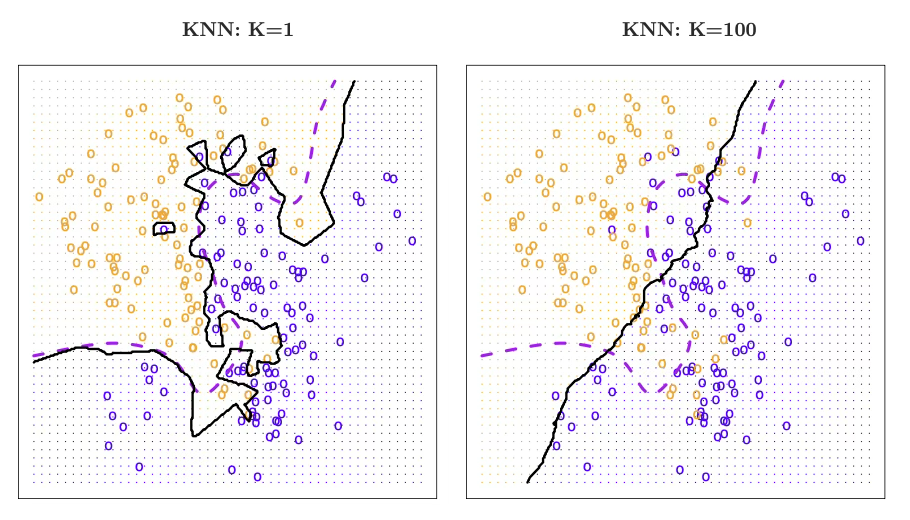
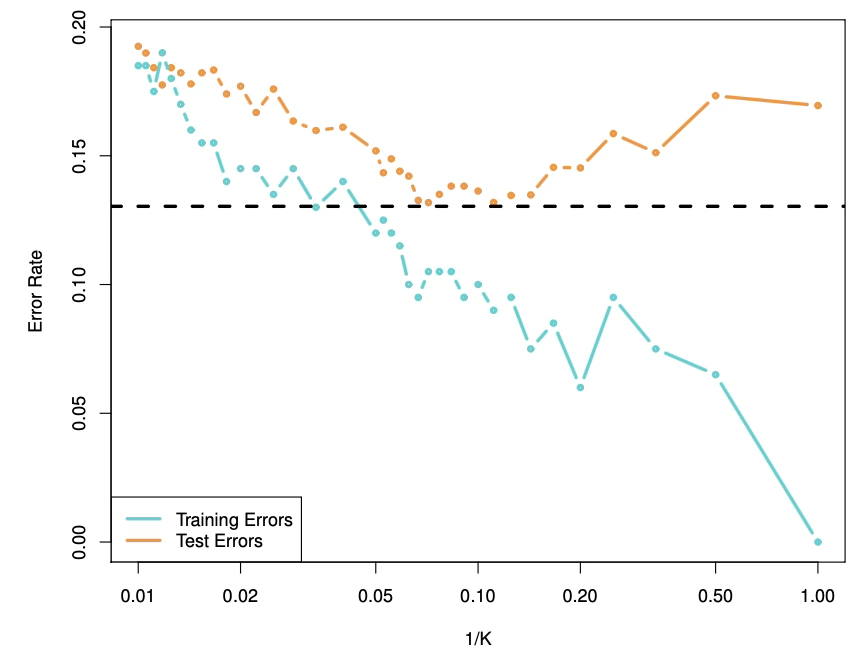
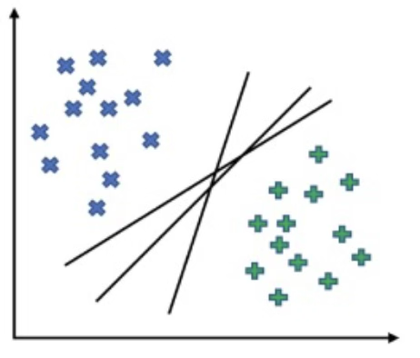
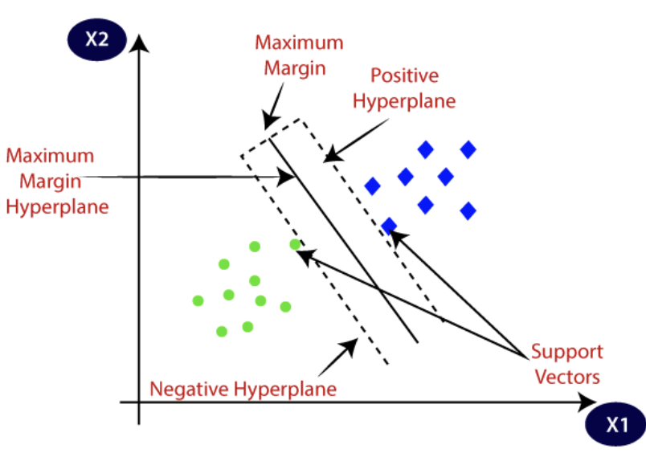
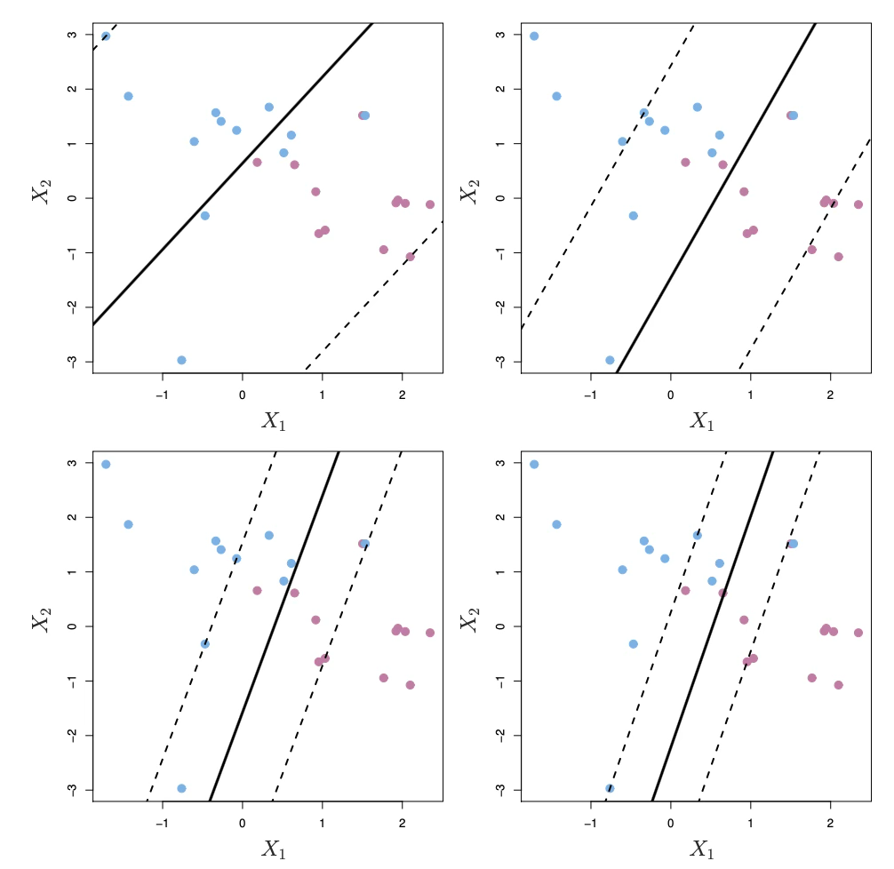
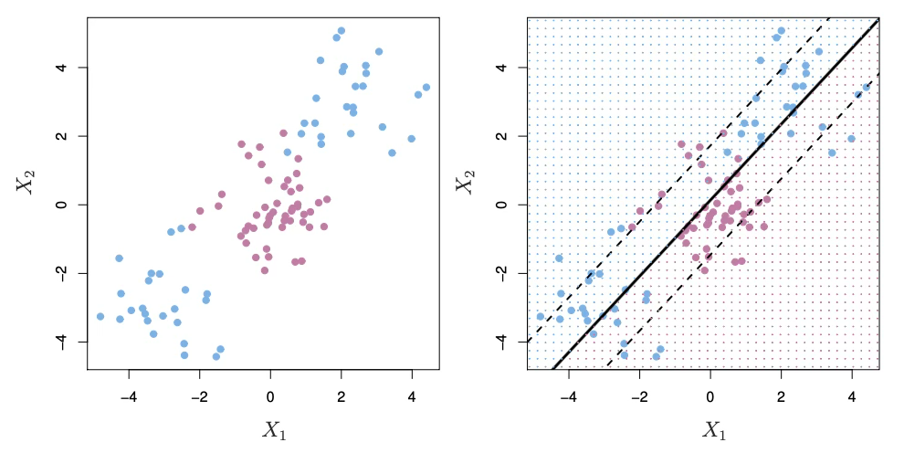

MLDL 머신러닝 분류 - kNN SVM
Chapter 1. 머신러닝 분류 (k-NN | SVM)
1. 전통적 분류방법과 차이
분류 문제는 본질적으로 조건부 확률 \(P(Y = k \mid X = x),k = 1,\ldots,K\)을 추정하거나(확률예측), 최소한 그 확률에 기반한 의사결정 규칙 \(\widehat{y}(x) = \arg\max_{k}P(Y = k \mid X = x)\)을 구현하는 일이다. 통계적 분류모형과 머신러닝 분류기는 모두 이 목표를 공유하지만, 접근 방식이 다르다.
(1) 통계적 분류모형
”확률모형을 먼저 세우고, 그 안에서 추정한다”. 통계적 분류모형(로지스틱 회귀, LDA/QDA)의 출발점은 데이터 생성 메커니즘에 대한 가정이다.
(1) 로지스틱 회귀: \(P(Y \mid X)\)를 직접 모형화 (Discriminative)
이진분류에서 \(P(Y = 1 \mid X = x) = \sigma(\beta_{0} + \beta^{\top}x) = \frac{1}{1 + e^{- (\beta_{0} + \beta^{\top}x)}}\)처럼 조건부 확률을 직접 모형화한다. 즉, ”결정경계가 선형(log-odds 선형)“이라는 구조적 가정을 둔다.
(2) LDA/QDA: \(P(X \mid Y)\)와 \(P(Y)\)를 모형화 (Generative)
베이즈 정리를 이용해 \(P(Y = k \mid X = x) \propto \pi_{k}f_{k}(x)\)를 계산한다. 여기서 \(\pi_{k} = P(Y = k),f_{k}(x) = p(X = x \mid Y = k)\).
- LDA: \(X \mid Y = k \sim N(\mu_{k},\Sigma)\) (공분산 동일) → 결정경계가 선형
- QDA: \(X \mid Y = k \sim N(\mu_{k},\Sigma_{k})\) (공분산 클래스별) → 결정경계가 이차(곡선)
통계적 분류모형의 강점/한계
- 강점: 추정/검정/해석(계수, 신뢰구간 등)이 체계적, 소표본에서도 안정적(가정이 맞으면)
- 한계: 가정이 틀리면(비선형, 복잡한 상호작용, 비정규 등) 성능이 급격히 저하될 수 있음
(2) 머신러닝 분류기
”가정보다 예측성능·일반화를 먼저 최적화한다”. 머신러닝 분류기는 대체로 명시적 확률가정(정규성, 선형성 등)을 약하게 두거나 거의 두지 않고, 훈련오차만 줄이는 것이 아니라 일반화 성능을 최대화하는 방향으로 설계된다.
(1) 목표함수 관점: 경험위험 + 규제(복잡도 제어)
머신러닝의 공통 형태는 다음과 같이 정리할 수 있다. \(\min_{f \in \mathcal{F}}\frac{1}{n}\overset{n}{\sum_{i = 1}}\ell(y_{i},f(x_{i})) + \lambda\Omega(f)\), 여기서 \(\ell( \cdot )\)은 손실함수(예: 0-1 loss, hinge loss, log loss 등), \(\Omega(f)\)는 복잡도 페널티(모형이 너무 흔들리지 않게 제어), 그리고 \(\lambda\)는 적합 vs 단순성의 균형(튜닝 파라미터)이다.
즉, 머신러닝은 ”데이터를 잘 맞추되(적합) 너무 복잡해지지 않게(규제)“라는 Bias–Variance trade-off를 직접 다룬다.
(2) 의사결정규칙을 직접 학습하는 방식이 많다
통계적 모형이 확률모형(혹은 분포가정)으로부터 P(Y\mid X)를 유도하는 경우가 많은 반면, 머신러닝은 종종 결정경계/분류규칙 자체를 직접 최적화한다.
- k-NN: 주변 이웃의 다수결(지역적 규칙)
- SVM: 분류오차 대신 마진 최대화(hinge loss 기반)
- Tree: 불순도 감소로 분할 규칙을 누적
- Ensemble: 여러 약한 분류기를 결합해 일반화 향상
(3) ”튜닝 + 검증”이 모형의 일부다
머신러닝에서는 하이퍼파라미터(예: k-NN의 k, SVM의 C, \(\gamma\), 트리 깊이, learning rate 등)가 성능을 좌우한다. 따라서 교차검증(CV), 홀드아웃, 조기중단(early stopping) 같은 평가-선택 절차가 모형 학습의 핵심 구성요소가 된다.
(3) 전통적 방법과 머신러닝 방법 비교
가정과 유연성: 구조 가정 vs 데이터 주도 유연성
통계적 분류모형(로지스틱 회귀, LDA/QDA)은 먼저 데이터 생성 구조에 대한 비교적 강한 가정(예: 선형성, 정규성, 동분산 등)을 두고 그 틀 안에서 모수를 추정한다. 이 때문에 모형 형태가 명확하고 해석이 쉽지만, 가정이 현실 데이터와 어긋나면(비선형·복잡한 상호작용·비정규 등) 예측 성능이 쉽게 제한될 수 있다. 반면 머신러닝 분류기는 명시적 가정보다는 일반화 성능을 우선하며 더 유연한 결정경계를 허용한다. 그 대신 과적합 위험을 제어하기 위한 하이퍼파라미터 튜닝과 검증(교차검증, 검증셋, 조기중단 등)이 사실상 필수로 포함된다.
확률 예측과 분류 정확도: 확률 모델링 중심 vs 성능 지표 중심
통계모형은 \(P(Y \mid X)\)의 확률 추정 자체가 핵심 산출물이다. 예를 들어 로지스틱 회귀는 \(P(Y = 1 \mid X = x) = \frac{1}{1 + \exp\{ - (\beta_{0} + \beta^{\top}x)\}}\)처럼 조건부확률을 직접 모형화하여 위험도 해석이나 임계값 기반 의사결정에 자연스럽게 연결된다. 머신러닝 분류는 종종 정확도(Accuracy), F1, AUC 같은 분류 성능 지표를 목표로 최적화되는 경우가 많다. 다만 Random Forest, Gradient Boosting, Neural Network 등은 클래스 확률도 출력할 수 있으며, 이때 출력 확률이 실제 빈도와 잘 맞는지(확률보정, calibration)를 점검·보정해야 하는 상황이 자주 발생한다.
해석가능성: 내재적 해석과 추론 vs 사후적 설명 도구
통계모형은 계수 \(\beta\)를 통해 변수 효과를 직접 설명할 수 있고(예: 오즈비 \(e^{\beta_{j}}\)), 표준오차·신뢰구간·가설검정 등 불확실성까지 함께 제공한다는 점에서 ”설명과 추론”에 강하다. 반면 머신러닝 모형은 구조가 복잡할수록 내부 파라미터만으로 해석하기 어렵기 때문에, permutation importance, PDP/ICE, SHAP 등의 사후적 설명 기법을 활용해 ”어떤 변수가 얼마나 기여했는가”를 보완적으로 제시하는 방식이 일반적이다.
데이터 규모와 차원: 소표본 안정성 vs 대규모·고차원 대응(규제 중요)
통계모형은 가정이 적절할 경우 소표본에서도 비교적 안정적으로 추정되며, 모형 복잡도가 제한되어 과적합 위험이 상대적으로 작다. 머신러닝은 데이터가 많을수록(그리고 패턴이 복잡할수록) 강점을 발휘하는 경우가 많지만, 고차원에서는 불필요한 변수로 인해 분산이 커지거나 학습이 불안정해질 수 있다. 따라서 정규화(regularization), 특징선택(feature selection), 차원축소, 적절한 규제 및 튜닝이 성능과 일반화를 좌우한다.
2. 규칙 기반(k-NN)
(1) 핵심 아이디어
k-NN은 ”입력공간에서 서로 가까운 관측치들은 같은 클래스에 속할 가능성이 높다”는 지역적 평활성 가정에 기반한다. 즉, 어떤 점 x 근처에서는 클래스 확률 \(P(Y = k \mid X = x)\)가 급격히 변하지 않는다고 보고, x 주변의 훈련 표본들로부터 그 확률을 국소적으로 추정한다.
이 방법은 회귀계수나 명시적 모수(예:\(\beta\))를 학습하는 형태의 ”모형 적합”이라기보다, 훈련 데이터 자체가 분류 규칙을 구성한다는 점에서 사례 기반(instance-based) 혹은 기억 기반(memory-based) 방법으로 분류된다. 새로운 관측치가 들어오면, 미리 정해 둔 규칙(거리 및 K)에 따라 ”가까운 이웃들을 찾아” 그들의 클래스 정보를 활용해 예측한다.
(2) 베이즈 분류기와 k-NN의 위치
분류 문제의 이상적 목표는, 각 x에서의 참 조건부확률 \(P(Y = k \mid X = x)\)을 알고 있을 때, 다음 규칙으로 분류하는 베이즈 분류기(Bayes classifier)를 사용하는 것이다. \({\widehat{y}}_{\text{Bayes}}(x) = \arg\max_{k}P(Y = k \mid X = x)\). 이 규칙은 가능한 모든 분류기 중에서 기대 분류오차를 최소화한다는 의미에서 ”최적”이다.
그러나 현실 데이터에서는 \(P(Y \mid X)\)의 진짜 형태를 알 수 없으므로, 베이즈 분류기를 직접 계산하는 것은 불가능하다. 따라서 베이즈 분류기는 실제로는 도달할 수 없지만, 다른 방법들의 성능을 판단하는 기준점으로서 이상적인 ’황금 기준(gold standard)’ 역할을 한다.
이러한 맥락에서 많은 분류 방법들은 다음의 공통 전략을 따른다. 데이터로부터 P(Y=k\mid X=x)를 어떤 방식으로든 추정하고 추정 확률이 가장 큰 클래스로 할당한다. \(\widehat{y}(x) = \arg\max_{k}\widehat{P}(Y = k \mid X = x)\)
k-NN은 이 전략을 가장 직관적으로 구현한 대표적 방법이다. 즉, x 주변의 ”가까운 이웃”들이 보여주는 클래스 비율을 이용해 \(P(Y \mid X = x)\)를 국소적으로 근사하고, 그 값이 최대가 되는 클래스로 분류한다.
요약하면, 베이즈 분류기가 ”알 수 없는 진짜 확률에 기반한 최적 규칙”이라면, k-NN은 그 확률을 ”이웃의 경험적 비율”로 대체하여 현실에서 실행 가능하게 만든 비모수적 근사 규칙이다.
(3) 거리와 이웃 정의
이웃 집합의 정의
훈련표본 \(\{(x_{i},y_{i})\}_{i = 1}^{n},x_{i} \in \mathbb{R}^{p}\)을 정의하자. 새 관측치 \(x_{0}\)에 대해 거리 \(d(x_{0},x_{i})\)가 작은 순서로 k개를 선택하여 이웃 집합을 정의한다:
\(N_{k}(x_{0}) = \{ i_{1},\ldots,i_{k}\},d(x_{0},x_{i_{1}}) \leq \cdots \leq d(x_{0},x_{i_{k}})\), 여기서 \(N_{k}(x_{0})\)는 ”이웃 인덱스 집합”이다(이웃 점 자체가 아니라 인덱스)아다.
대표 거리(연속형 변수)
가장 흔한 선택은 유클리드 거리보다 일반적으로는 Minkowski 거리(\(q \geq 1\))를 사용한다.
\(d_{q}(x,z) = (\overset{p}{\sum_{j = 1}}|x_{j} - z_{j}|^{q})^{\frac{1}{q}}\), 여기서 q=1이면 Manhattan, q=2는 Euclidean 거리이다.
변수 스케일 문제와 표준화
변수의 단위/분산이 다르면 거리 계산이 특정 변수에 의해 지배되어 이웃 선택이 왜곡된다. 따라서 보통 표준화 후 거리 계산을 수행한다.
\[x_{ij}^{(std)} = \frac{x_{ij} - {\overline{x}}_{j}}{s_{j}}\]
\({\overline{x}}_{j},s_{j}\)는 반드시 훈련 데이터에서 계산한 값을 사용하고, 테스트 데이터에도 같은 값으로 변환해야 한다. 테스트 데이터의 평균/표준편차로 표준화하면 정보 누수(leakage)가 발생한다.
범주형 변수가 있을 때
거리는 연속형에 자연스럽다. 범주형이 포함되면 다음 중 하나를 고려한다.
원-핫 인코딩 후 거리 계산(차원 증가 주의)
Gower distance 등 혼합형 거리(연속+범주)
도메인 맞춤 거리(예: 매칭 불일치 수)
동률 처리
\(\widehat{p}(c \mid x_{0})\)가 같은 클래스가 나오거나, 거리 동률로 k번째 이웃이 애매한 경우가 있다. 일반적으로는 (i) 무작위 tie-break, (ii) 더 작은 거리 이웃 우선, (iii) 가중 k-NN 사용 등으로 처리한다.
(4) 분류 규칙 (다중분류 포함)
클래스 집합이 \(\{ 1,\ldots,K\}\)일 때, k-NN은 x_0의 이웃들에서 클래스 비율로 조건부확률을 추정한다.
\(\widehat{p}(c \mid x_{0}) = \frac{1}{k}\sum_{i \in N_{k}(x_{0})}\mathbf{1}(y_{i} = c),c = 1,\ldots,K\), 여기서 \(\mathbf{1}( \cdot )\)는 지시함수(indicator)이다.
예측은 최대 사후확률(MAP) 규칙, 즉 다수결과 동일한 원리로 결정된다:
\[\widehat{y}(x_{0}) = \arg\max_{c \in \{ 1,\ldots,K\}}\widehat{p}(c \mid x_{0})\]
이 식은 ”다중분류”에서도 그대로 성립한다. 이진분류라면 \(\widehat{p}(1 \mid x_{0}) > 0.5\)와 같은 임계값 규칙으로도 표현 가능.
(5) 가중 k-NN (거리 가중, Weighted k-NN)
왜 가중을 주나?
기본 k-NN은 이웃 k개를 모두 동일 가중치로 취급한다. 하지만 직관적으로는 더 가까운 이웃이 더 큰 정보를 가지므로, 거리 기반 가중치를 부여하면 성능이 개선되는 경우가 많다.
가중치 정의
가까운 이웃에 더 큰 가중치를 준다. \(w_{i}(x_{0}) = \frac{1}{d(x_{0},x_{i})^{r} + \varepsilon},r > 0,\varepsilon > 0\), 여기서 \(\varepsilon\)는 d=0일 때 발산을 막기 위한 작은 값(수치 안정화)이며, r가 클수록 ”가까운 이웃”을 더 강하게 강조(유연성 증가)한다.
가중 확률 추정과 예측
\[\widehat{p}(c \mid x_{0}) = \frac{\sum_{i \in N_{k}(x_{0})}w_{i}(x_{0})\mathbf{1}(y_{i} = c)}{\sum_{i \in N_{k}(x_{0})}w_{i}(x_{0})}\widehat{y}(x_{0}) = \arg\max_{c}\widehat{p}(c \mid x_{0})\]
이 방식은 동률 문제를 완화하고, 경계 근처에서 더 자연스러운 확률 추정을 제공한다.
커널 가중(대안)
거리 가중치를 커널 형태로 두기도 한다. \(w_{i}(x_{0}) = \exp( - \gamma d(x_{0},x_{i})^{2})\), 여기서 \(\gamma\)가 클수록 가까운 점에 더 집중(국소성 강화)하게 된다.
(6) k와 Bias–Variance
k-NN에서 k는 모델의 유연성(flexibility)을 직접 결정하는 핵심 튜닝 파라미터이다. k가 작으면 예측에 사용되는 이웃의 범위가 매우 좁아져, 각 점 주변의 국소적 패턴(심지어 노이즈까지)도 그대로 따라가게 된다. 그 결과 결정경계는 매우 구불구불해지고, 훈련 데이터에는 잘 맞지만 새로운 데이터에서는 성능이 떨어질 수 있는 저편향·고분산(과적합) 상태로 가기 쉽다.

반대로 k가 커지면 더 넓은 이웃을 평균내어 판단하므로 우연한 변동이 상쇄되어 경계가 매끈해지고 변동성이 줄어든다. 하지만 이 경우 지역적 구조까지 과도하게 평활화되어 실제로 필요한 비선형 경계를 놓칠 수 있어 고편향·저분산(과소적합) 위험이 커진다.
따라서 k는 ”훈련 성능”이 아니라 ”일반화 성능”을 기준으로 정해야 하며, 실무적으로는 교차검증을 통해 테스트 오차(또는 AUC/F1 등)가 최소가 되는 k를 선택하는 것이 표준적 절차이다.
다음 그림은 k-NN에서 이웃의 수 K를 바꾸면 분류기의 유연성(복잡도)이 어떻게 달라지고, 그에 따라 훈련오차와 테스트오차가 서로 다른 방식으로 변한다는 점을 보여준다. 가로축은 1/K로 표시되어 있는데, 이는 K가 작아질수록 1/K가 커져 오른쪽으로 갈수록 분류기가 더 유연해진다는 뜻이다. 즉, 오른쪽으로 갈수록 결정경계가 더 구불구불해져 훈련 데이터의 국소적 패턴을 더 적극적으로 따라가게 된다.

먼저 훈련오차(파란색)는 K가 작아질수록 꾸준히 감소한다. 이는 더 유연한 모델일수록 훈련 데이터에 맞춰 경계를 세밀하게 조정할 수 있기 때문이다. 극단적으로 K=1에 가까워지면 각 관측치가 사실상 자기 자신과 가장 가까운 이웃이 되어 훈련 데이터는 거의 완벽하게 분류되므로, 훈련오차가 0에 근접할 수도 있다. 따라서 훈련오차만 보면 K를 계속 줄이는 것이 좋아 보이지만, 이 판단은 일반화 성능을 보장하지 않는다.
반면 테스트오차(주황색)는 같은 방식으로 움직이지 않는다. K를 어느 정도 줄여 유연성을 키우면 처음에는 테스트오차가 감소하는데, 이는 너무 단순했던 결정경계가 실제 클래스 구조를 더 잘 반영하기 시작하기 때문이다. 그러나 K가 지나치게 작아지면 모델이 신호뿐 아니라 우연한 변동(노이즈)까지 따라가면서 과적합이 발생하고, 그 결과 테스트오차가 다시 증가한다. 즉 테스트오차는 일반적으로 처음에는 내려가다가 어느 지점 이후 다시 올라가는 U자 형태를 띠며, 이 U자 곡선의 최저점이 ”가장 적절한 K”에 해당한다.
그림의 검은 점선은 베이즈 오류율을 나타내며, 이는 주어진 문제에서 어떤 분류기를 쓰더라도 이론적으로 완전히 없앨 수 없는 최소 오류(불가약 오차)의 기준선이다. 적절한 K를 선택하면 테스트오차가 이 기준선에 가까워질 수 있지만, K가 너무 크거나 너무 작으면 각각 과소적합 또는 과적합으로 인해 테스트오차가 커져 베이즈 오류율과의 차이가 벌어진다. 또한 곡선이 매끈하지 않고 들쭉날쭉한 것은 훈련 데이터가 비교적 작아, K가 조금만 바뀌어도 이웃 구성과 결정경계가 민감하게 변하는 표본 변동의 영향이 나타나기 때문이다.
결론적으로 이 그림은 ”훈련오차를 최소화하는 방향으로 모델을 복잡하게 만드는 것”이 곧 ”좋은 예측모형”을 의미하지 않으며, 실제로는 테스트오차가 최소가 되는 적절한 유연성 수준(즉 적절한 K)이 존재한다는 사실을 강조한다. 따라서 k-NN에서 K는 훈련 성능이 아니라 일반화 성능을 기준으로, 보통 교차검증을 통해 선택해야 한다.
(7) kNN 장단점
k-NN의 가장 큰 장점은 방법이 직관적이고 구현이 간단하다는 점이다. 별도의 복잡한 모수 추정 없이도 데이터의 국소 구조를 이용해 분류를 수행하므로, 선형 가정에 묶이지 않고 매우 유연한 비선형 결정경계를 자연스럽게 만들 수 있다. 반면 단점도 분명하다. k-NN은 학습 단계가 가벼운 대신, 새로운 관측치가 들어올 때마다 전체 훈련 데이터와의 거리를 계산해 이웃을 찾아야 하므로 예측 비용이 커지며(대략 O(np)), 데이터가 커질수록 실시간 예측이 부담될 수 있다. 또한 차원이 커질수록 거리의 상대적 차이가 희미해져 ”가까움” 자체가 의미를 잃는 차원의 저주 문제가 나타나 성능이 악화되기 쉽다. 마지막으로 거리 기반 방법이기 때문에 변수 스케일에 매우 민감하고(표준화가 필수에 가까움), 이상치가 있으면 거리 계산이 왜곡되어 이웃 선택이 불안정해질 수 있다는 점도 중요한 한계로 고려해야 한다.
3. 마진 기반(SVM)
(1) 개념
SVM은 1990년대 컴퓨터 과학 분야에서 개발된 분류 방법으로, 이후 그 인기가 꾸준히 증가해 왔다. SVM은 다양한 상황에서 좋은 성능을 보이는 것으로 알려져 있으며, 종종 별다른 특별한 조정 없이도 잘 작동하는(”out of the box”) 분류기 중 하나로 여겨진다.
서포트 벡터 머신은 최대 마진 분류기(maximal margin classifier)라고 불리는 단순하고 직관적인 분류기의 일반화 형태이다. 이 분류기는 우아하고 단순하지만, 클래스들이 선형 경계로 완전히 분리 가능(separable)해야 한다는 조건을 필요로 하므로, 안타깝게도 대부분의 데이터셋에는 적용할 수 없다는 것을 보게 될 것이다.
최대 마진 분류기를 확장하여 더 넓은 범위의 경우에 적용할 수 있는 서포트 벡터 분류기(support vector classifier)를 소개한다. 비선형 클래스 경계를 수용하기 위해 서포트 벡터 분류기를 한 단계 더 확장한 서포트 벡터 머신을 소개한다. 서포트 벡터 머신은 기본적으로 두 개의 클래스가 존재하는 이진 분류 설정을 대상으로 한다.
(2) 최대 마진 분류기 (Maximal Margin Classifier)
초평면이란?
p차원 공간에서 초평면(hyperplane)은 차원이 p-1인 평평한(평탄한) 아핀 부분공간이다. 예를 들어 2차원에서 초평면은 1차원 평평한 부분공간, 즉 직선이다. 3차원에서 초평면은 2차원 평평한 부분공간, 즉 평면이다. p>3인 경우 초평면을 시각화하기는 어렵지만, ”차원이 p-1인 평평한 부분공간”이라는 개념은 그대로 적용된다.
초평면의 수학적 정의는 매우 간단하다. p-차원에서 초평면은 다음 방정식으로 정의된다.
\(\beta_{0} + \beta_{1}X_{1} + \beta_{2}X_{2} + \cdots + \beta_{p}X_{p} = 0\). p차원 공간(즉 길이가 p인 벡터)에 있는 점 \(X = (X_{1},X_{2},\ldots,X_{p})^{\top}\)가 위를 만족하면, 그 점은 초평면 위에 놓인다.
이제 X가 위의 식을 만족하지 않는다고 하자. 대신 \(\beta_{0} + \beta_{1}X_{1} + \beta_{2}X_{2} + \cdots + \beta_{p}X_{p} > 0\) 라면, 이는 X가 초평면의 한쪽에 놓여 있음을 뜻한다. 반대인 경우에는 X는 초평면의 다른 쪽에 놓인다. 따라서 초평면은 p차원 공간을 두 개의 부분으로 나누는 경계로 생각할 수 있다. 점이 초평면의 어느 쪽에 있는지는 부호(sign)를 계산하는 것만으로 쉽게 판별할 수 있다.
이 그림은 초평면(hyperplane)이 차원에 따라 어떻게 나타나는지를 보여주는데, 2차원 \(\mathbb{R}^{2}\)에서는 초평면이 한 차원 낮은 1차원 경계이므로 직선으로 나타나 평면을 두 영역으로 나누고(왼쪽), 3차원 \(\mathbb{R}^{3}\)에서는 한 차원 낮은 2차원 경계이므로 평면으로 나타나 공간을 두 반공간으로 분할한다(오른쪽); 따라서 빨간 점과 초록 점처럼 서로 다른 클래스의 관측치들은 이 직선/평면의 서로 다른 쪽에 위치하게 되며, 어떤 점 x가 \(\beta_{0} + \beta_{1}x_{1} + \cdots + \beta_{p}x_{p}\)의 부호에 따라 초평면의 어느 편에 놓이는지가 분류 결과를 결정한다.

분리 초평면을 이용한 분류
이제 p차원 공간에 있는 n개의 훈련 관측치로 이루어진 \(n \times p\) 데이터 행렬 X, \(x_{1} = \left( \begin{array}{r} x_{11} \\ \vdots \\ x_{1p} \end{array} \right),\ldots,x_{n} = \left( \begin{array}{r} x_{n1} \\ \vdots \\ x_{np} \end{array} \right)\)가 있다고 하자. 또한 이 관측치들이 두 클래스에 속한다고 하자. 즉, \(y_{1},\ldots,y_{n} \in \{ - 1,1\}\)이며, -1은 한 클래스를, 1은 다른 클래스를 나타낸다.
아울러 관측될 특성 벡터가 p차원인 테스트 관측치 \(x^{*} = (x_{1}^{*},\ldots,x_{p}^{*})^{\top}\)도 하나 존재한다고 하자. 우리의 목표는 훈련 데이터에 기반하여, 테스트 관측치의 특성 측정값을 이용해 이를 올바르게 분류하는 분류기를 개발하는 것이다.
훈련 관측치들이 클래스 라벨에 따라 완벽히 분리되도록 하는 초평면이 존재한다고 하자. 이때 분리 초평면은 모든 훈련표본에 대해 다음 성질을 만족한다:
\(y_{i}(\beta_{0} + \beta^{\top}x_{i}) > 0,i = 1,\ldots,n\) 만약 분리 초평면이 존재한다면 이를 이용해 매우 자연스러운 분류 규칙을 구성할 수 있다. 즉, 결정함수 \(f(x) = \beta_{0} + \beta^{\top}x\)의 부호에 따라 테스트 관측치 \(x^{*}\)를 분류하며, \(\widehat{y}(x^{*}) = sign(f(x^{*}))\)로 정의된다. 다시 말해 \(f(x^{*}) > 0\)이면 클래스 +1, \(f(x^{*}) < 0\)이면 클래스 -1로 할당한다.
또한 \(y(x^{*})\)의 크기도 활용할 수 있다. \(y(x^{*})\)가 0에서 멀면, \(x^{*}\)가 초평면에서 멀리 떨어져 있다는 뜻이므로 분류에 대한 확신이 커진다. 반대로 0에 가까우면 \(x^{*}\)는 초평면 근처에 위치하므로 분류 확신이 낮아진다. 분리 초평면에 기반한 분류기는 선형 결정경계(linear decision boundary)를 만든다.
최대 마진 분류기 (The Maximal Margin Classifier)
일반적으로 데이터가 초평면으로 완벽히 분리될 수 있다면, 실제로 그런 초평면은 무한히 많이 존재한다. 이는 어떤 분리 초평면이라도 관측치들과 접촉하지 않는 한, 약간 위아래로 평행 이동하거나 회전시킬 수 있기 때문이다.

자연스러운 선택은 최대 마진 초평면(maximal margin hyperplane)(또는 최적 분리 초평면(optimal separating hyperplane))이다. 이는 훈련 관측치들로부터 가장 멀리 떨어진 분리 초평면을 말한다.
구체적으로, 각 분리 초평면에 대해 각 훈련 관측치로부터 그 초평면까지의 (수직) 거리를 계산할 수 있으며, 그 거리들 중 가장 작은 값이 ”관측치에서 초평면까지의 최소거리”가 된다.
이 최소거리를 마진(margin)이라 부른다. 최대 마진 초평면은 이 마진이 가장 큰 분리 초평면, 즉 훈련 관측치들로부터의 최소거리가 최대가 되는 초평면이다.
몇몇 훈련 관측치가 최대 마진 초평면과 동일한 최소 거리를 가지며 마진 경계(점선) 위에 놓여, 결과적으로 마진의 폭과 초평면의 위치를 결정하고 있음을 볼 수 있는데, 이러한 관측치들을 서포트 벡터(support vectors)라고 한다.
서포트 벡터는 p차원 특성공간의 점으로서, 이 점들이 조금만 이동해도 ”가장 가까운 점”이 바뀌기 때문에 최대 마진 초평면 역시 함께 이동하게 된다는 의미에서 초평면을 ’지지(support)’한다.
최대 마진 초평면이 전체 데이터에 의해 정해지는 것이 아니라 오직 서포트 벡터들에 의해 직접적으로 결정된다는 사실이며, 다른 관측치들은 마진 경계 안쪽으로 들어오지만 않는 한(즉 마진을 침범하지 않는 한) 위치가 다소 변해도 초평면에 영향을 주지 않는다. 이러한 ”경계 근처의 소수 관측치만이 결정경계를 규정한다”는 성질은 이후 서포트 벡터 분류기와 서포트 벡터 머신의 핵심 원리로 다시 등장한다.

이제 테스트 관측치가 최대 마진 초평면의 어느 쪽에 위치하는지를 기준으로 분류할 수 있고, 이를 최대 마진 분류기(maximal margin classifier)라 한다.
훈련 데이터에서 마진이 큰 분류기는 테스트 데이터에서도 마진이 클 것이며, 따라서 테스트 관측치도 올바르게 분류할 것이라고 기대한다. 최대 마진 분류기는 종종 성공적이지만, p가 클 때는 과적합을 유발할 수도 있다.
만약 \(\beta_{0},\beta_{1},\ldots,\beta_{p}\)가 최대 마진 초평면의 계수라면, 최대 마진 분류기는 \(f(x^{*}) = \beta_{0} + \beta_{1}x_{1}^{*} + \beta_{2}x_{2}^{*} + \cdots + \beta_{p}x_{p}^{*}\)의 부호에 따라 테스트 관측치 \(x^{*}\)를 분류한다.
최대 마진 분류기의 구성
이제 n개의 훈련 관측치 \(x_{1},\ldots,x_{n} \in \mathbb{R}^{p}\)와 클래스 라벨 \(y_{1},\ldots,y_{n} \in \{ - 1,1\}\)가 주어졌을 때, 최대 마진 초평면을 구성하는 문제를 생각하자. 간단히 말해, 최대 마진 초평면은 다음 최적화 문제의 해이다.
\[\begin{matrix} \underset{\beta_{0},\beta_{1},\ldots,\beta_{p},M}{\text{maximize}} & M \\ \text{subject to} & \overset{p}{\sum_{j = 1}}\beta_{j}^{2} = 1, \\ & y_{i}(\beta_{0} + \beta_{1}x_{i1} + \beta_{2}x_{i2} + \cdots + \beta_{p}x_{ip}) \geq M,i = 1,\ldots,n. \end{matrix}\]
M이 양수일 때 각 관측치가 초평면의 올바른 쪽에 놓이도록 보장한다. 사실 각 관측치가 올바른 쪽에 있기 위해서는 \(y_{i}(\beta_{0} + \beta_{1}x_{i1} + \cdots + \beta_{p}x_{ip}) > 0\)이면 충분하다. 따라서 위 식의 제약은, M>0인 경우 각 관측치가 ”여유(cushion”를 갖고 올바른 쪽에 위치하도록 더 강하게 요구하는 것이다.
둘째로, \(\overset{p}{\sum_{j = 1}}\beta_{j}^{2} = 1\) 은 초평면 자체에 대한 제약이라기보다는 스케일을 고정하기 위한 조건이다. 왜냐하면 \(\beta_{0} + \beta_{1}x_{i1} + \cdots + \beta_{p}x_{ip} = 0\)이 어떤 초평면을 정의한다면, \(k \neq 0\)인 임의의 상수 k에 대해 \(k(\beta_{0} + \beta_{1}x_{i1} + \cdots + \beta_{p}x_{ip}) = 0\)도 동일한 초평면을 정의하기 때문이다.
이 제약하에서 i번째 관측치가 초평면까지 갖는 수직거리는 \(y_{i}(\beta_{0} + \beta_{1}x_{i1} + \beta_{2}x_{i2} + \cdots + \beta_{p}x_{ip})\)로 주어진다는 것을 보일 수 있다.
따라서 제약식은 각 관측치가 초평면의 올바른 쪽에 놓이면서 동시에 초평면으로부터 최소한 M만큼 떨어져 있도록 보장한다. 그러므로 M은 우리 초평면의 마진을 나타내며, 최적화 문제는 M을 최대화하는 \(\beta_{0},\beta_{1},\ldots,\beta_{p}\)를 선택한다.
비분리인 경우: 하드 마진의 실패와 소프트 마진의 필요성
최대 마진 분류기(하드 마진)는 두 클래스가 어떤 초평면에 의해 완벽히 분리(linearly separable)될 수 있다는 가정 하에서 정의된다. 즉, 모든 훈련 표본이 올바른 쪽에 놓이면서 동시에 일정한 여유(마진)를 갖도록 \(y_{i}(\beta_{0} + \beta^{\top}x_{i}) \geq M,i = 1,\ldots,n,(M > 0)\)를 만족하는 초평면을 찾고, 그중 M을 최대화하는 해를 선택한다.
그러나 실제 데이터에서는 두 클래스가 서로 섞여 있어 어떤 직선(2차원) 또는 초평면(고차원)으로도 모든 관측치를 완전히 분리할 수 없는 비분리(non-separable) 상황이 빈번하다. 이 경우에는 모든 i에 대해 \(y_{i}(\beta_{0} + \beta^{\top}x_{i}) > 0\)을 동시에 만족하는 분리 초평면 자체가 존재하지 않으므로, 하드 마진 최적화 문제는 M>0 인 해를 갖지 못하고, 결과적으로 최대 마진 분류기 또한 정의될 수 없다.

이를 그림으로 이해하면 더 명확하다. 그림(비분리 + 마진)에서 실선은 후보 초평면 \(f(x) = \beta_{0} + \beta^{\top}x = 0\)이고, 점선 두 개는 마진 경계 \(f(x) = \pm 1\)을 나타낸다(이때 기하학적 마진 폭은 \(1/ \parallel \beta \parallel\)) 이상적인 하드 마진 분류기라면 모든 파란 점(+1)은 \(f(x) \geq + 1\) 쪽에, 모든 주황 점(-1)은 \(f(x) \leq - 1\) 쪽에 위치해야 한다. 하지만 실제로는 일부 점들이 마진 내부로 들어오거나(마진 침범), 심지어 반대편으로 넘어가기도(오분류) 하며, 그림에서는 이러한 점들을 테두리로 강조해 표시했다. 즉, 어떤 초평면을 선택하더라도 ”모든 점을 마진 밖으로 밀어내는” 하드 마진 조건을 만족시키기 어렵기 때문에, 하드 마진은 현실 데이터에 그대로 적용될 수 없다.
따라서 비분리 상황에서는 ”정확히(exactly) 분리”를 포기하고, 일부 위반을 허용하는 방식으로 문제를 확장해야 한다. 이것이 소프트 마진(soft margin)이며, 각 관측치가 마진 조건을 얼마나 위반했는지를 나타내는 슬랙 변수 \(\xi_{i} \geq 0\)를 도입하여 \(y_{i}(\beta_{0} + \beta^{\top}x_{i}) \geq 1 - \xi_{i},i = 1,\ldots,n\)처럼 제약을 완화한다. 그리고 ”마진을 크게(단순한 경계)” 유지하려는 목표와 ”위반을 작게(오분류/침범 최소화)” 하려는 목표를 동시에 고려하여\(\min_{\beta_{0},\beta,\xi}\frac{1}{2} \parallel \beta \parallel^{2} + C\overset{n}{\sum_{i = 1}}\xi_{i}\text{s.t.}y_{i}(\beta_{0} + \beta^{\top}x_{i}) \geq 1 - \xi_{i},\xi_{i} \geq 0\)를 푼다.
이때 C는 위반을 얼마나 강하게 벌점할지(즉, 오분류 허용 vs 마진 확보의 균형)를 조절하는 튜닝 파라미터이며, 이러한 소프트 마진 최대 마진 방법을 서포트 벡터 분류기(support vector classifier)라고 부른다. 이후 커널을 도입해 비선형 경계까지 확장한 것이 서포트 벡터 머신(SVM)이다.
(3) 서포트 벡터 분류기
개념
두 클래스의 관측치가 특성공간에서 서로 섞여 있는 경우에는, 어떤 초평면을 그어도 모든 점을 완벽하게 양쪽으로 나누는 것이 불가능하다.
따라서 최대 마진 분류기가 요구하는 것처럼 ”모든 훈련점이 올바른 쪽에 있으면서 동시에 마진 바깥에 위치”하도록 만드는 조건을 만족시킬 수 없고, 그 결과 최대 마진 분류기 자체가 성립하지 않거나 적용될 수 없다.
현실의 데이터는 잡음, 측정오차, 클래스 중첩 등으로 인해 이러한 비분리 상황이 흔하므로, 완벽한 분리를 전제로 하는 접근은 근본적으로 적용 범위에 한계를 갖는다.
더 나아가, 데이터가 우연히 선형적으로 분리 가능한 경우라 하더라도 ”완벽 분리”가 항상 바람직한 목표는 아니다. 아래 그림이 보여주듯, 단 하나의 관측치가 추가되거나 위치가 조금만 바뀌어도 최대 마진 초평면이 크게 이동할 수 있는데, 이는 최대 마진 해가 특정 관측치(특히 경계 근처의 점이나 이상치)에 매우 민감하다는 뜻이다.
이런 민감성은 결과적으로 마진을 지나치게 작게 만들어 분류 경계 주변에서의 판단을 불안정하게 하고(즉, 예측 확신을 떨어뜨리고), 데이터의 작은 변동에 따라 결정경계가 크게 요동치게 하여 일반화 성능을 해치는 과적합 위험을 증가시킨다.
따라서 ”훈련 데이터를 완벽히 맞추는 분리 초평면”이 존재한다는 사실만으로 그 분류기가 좋은 모델이라고 결론내릴 수는 없으며, 오히려 일정 수준의 위반을 허용하는 더 강건한 접근이 필요해진다.

소프트 마진의 직관
소프트 마진의 핵심 직관은 ”훈련 데이터를 한 점도 틀리지 않게 맞추는 것”을 절대 목표로 삼기보다, 약간의 오류를 허용하더라도 전체적으로 더 안정적이고 일반화가 잘 되는 분류기를 만들자는 데 있다.
현실 데이터에서는 경계 근처의 애매한 점이나 이상치 하나가 결정경계를 크게 흔들 수 있는데, 완벽 분리를 강제하면 이러한 개별 관측치에 과도하게 끌려가면서 모델이 불안정해지기 쉽다.
따라서 소프트 마진은 일부 관측치가 마진을 침범하거나 심지어 오분류되는 것을 제한적으로 허용함으로써, 특정 몇 점에 대한 민감도를 낮추고 분류기를 더 강건하게 만든다.
그 결과 모든 훈련 표본을 완벽히 맞추는 대신, 훈련 데이터의 ”대부분”을 더 잘 설명하고 새로운 데이터에서도 성능이 유지되는 방향으로 균형을 잡게 된다. 이런 철학을 수학적으로 구현한 방법이 바로 서포트 벡터 분류기이며, 마진 위반을 허용한다는 의미에서 소프트 마진 분류기라고도 부른다.
서포트 벡터 분류기의 수식
목표: 마진 M을 크게 하되, 위반을 허용한다. \(\begin{matrix} \text{maximize} & M \\ \text{subject to} & \parallel \beta \parallel^{2} = 1 \\ & y_{i}(\beta_{0} + \beta^{\top}x_{i}) \geq M(1 - \varepsilon_{i}),i = 1,\ldots,n \\ & \varepsilon_{i} \geq 0,\overset{n}{\sum_{i = 1}}\varepsilon_{i} \leq C \end{matrix}\), 여기서 핵심은 슬랙 변수 \(\varepsilon_{i}\)와 튜닝 파라미터 C이다.
슬랙변수: 슬랙 변수 \(\varepsilon_{i}\)는 각 관측치 i가 다음 제약을 얼마나 위반하는지를 나타낸다. \(y_{i}f(x_{i}) \geq M(1 - \varepsilon_{i})\) 또는 표준화 하면
\(y_{i}f(x_{i}) \geq 1 - \varepsilon_{i}\text{)}\)이다. 즉, \(\varepsilon_{i}\)는 ”그 점이 얼마나 문제를 일으키는지(마진 침범/오분류)“를 정량화한다.

이 그림은 실선으로 표시된 초평면(결정경계)과 점선으로 표시된 마진 경계를 기준으로, 슬랙 변수 \(\varepsilon_{i}\)가 각 관측치의 ”마진/경계 위반 정도”를 어떻게 의미하는지를 기하학적으로 설명한다.
어떤 관측치가 자신의 클래스에 해당하는 마진 바깥쪽(점선 밖)에 위치하면 충분한 여유를 두고 올바르게 분류된 것이므로 \(\varepsilon_{i} = 0\)으로 해석된다.
반대로 관측치가 초평면의 올바른 쪽에 있기는 하지만 점선과 실선 사이의 마진 내부로 들어오면 분류는 맞지만 여유가 부족한 상태이므로 \(0 < \varepsilon_{i} < 1\)로, 즉 마진을 침범한 것으로 해석된다.
더 나아가 관측치가 실선을 넘어 초평면의 반대쪽에 놓이면 이는 오분류에 해당하며, 마진 위반을 넘어 경계 자체를 위반한 상황이므로 \(\varepsilon_{i} > 1\)로 해석된다.
이러한 관점에서 왼쪽 패널은 대부분의 점들이 \(\varepsilon_{i} = 0\)인 상태로 마진 바깥에 있으나 일부 점이 \(0 < \varepsilon_{i} < 1\)처럼 마진을 위반할 수 있음을 보여주고, 오른쪽 패널은 점이 추가되면 일부가 초평면의 반대편으로 넘어가 \(\varepsilon_{i} > 1\)인 오분류까지 제한적으로 허용해야 할 수도 있음을 보여준다.
따라서 이 그림은 소프트 마진 분류기에서 슬랙 변수의 값이 0, 양수, 그리고 1을 초과할 때 각각이 어떤 기하학적 상황을 뜻하는지를 대표적으로 시각화한 예시라고 정리할 수 있다.
튜닝 파라미터 C
C는 서포트 벡터 분류기(소프트 마진 SVM)에서 사용자가 정하는 튜닝 파라미터(hyperparameter)이다. C는 슬랙 변수 \(\varepsilon_{i}\)를 통해 마진 위반(및 오분류)을 얼마나 허용할지를 조절하며, 그 결과 결정경계의 위치와 마진 폭이 달라져 일반화 성능에 큰 영향을 준다.
따라서 C는 보통 교차검증으로 여러 후보값을 비교해 검증(테스트) 성능이 가장 좋은 값으로 선택한다.
이 그림은 동일한 데이터에 대해 서포트 벡터 분류기(소프트 마진)를 적합할 때, 튜닝 파라미터 C 값을 달리하면 결정경계(실선)와 마진(점선)이 어떻게 달라지는지를 4개의 패널로 비교한 것이다. 각 패널에서 굵은 실선은 분류 초평면 \(f(x) = 0\)이고, 양쪽의 점선은 마진 경계(예: \(f(x) = \pm M\) 또는 표준화된 \(\pm 1\))를 나타낸다.
제약식 \(\sum_{i}\varepsilon_{i} \leq C\)에서 C는 마진 위반을 허용하는 총량(예산)이므로, C가 클수록 마진 위반(마진 안쪽 진입, 심지어 오분류까지)에 대해 더 관대해진다.
그 결과, 모델은 ”모든 점을 마진 밖에 두려고 애쓰는” 대신 더 넓은 마진을 확보하는 방향으로 초평면을 선택할 수 있으며, 실제로 그림에서도 C가 큰 패널일수록 점선(마진)이 더 넓게 벌어지는 경향이 나타난다.
반대로 C가 작아지면 위반 예산이 줄어들어, 마진을 크게 잡으면 곧바로 많은 점들이 마진을 침범해 \(\sum\varepsilon_{i}\)가 커지기 때문에, 모델은 마진을 좁히는 쪽(점선 간격 축소)으로 조정하게 된다. 즉, \(C \downarrow\)일수록 마진이 점점 좁아지고, 결정경계는 ”마진 위반을 최소화”하는 쪽으로 재배치된다.

결론적으로 이 그림은 C가 ”위반 허용 정도”를 조절하며, C의 변화가 마진 폭(복잡도)과 경계 위치를 바꾸어 일반화 성능에 영향을 준다는 점을 시각적으로 보여준다.
(4) SVM support vector machine
서포트 벡터 분류기(소프트 마진)는 본질적으로 선형 결정경계를 만든다. 그러나 실제 데이터에서는 클래스 경계가 선형이 아닌 경우가 많으며, 이때 선형 분류기는 구조적으로 성능 한계를 가진다. 여기서는 ”선형 분류기 → 비선형 결정경계”로 확장하는 일반 메커니즘을 먼저 설명한 뒤, 이를 커널을 통해 계산적으로 효율적으로 구현하는 서포트 벡터 머신(SVM)을 소개한다.
비선형 결정경계가 필요한 이유와 특성공간 확장 아이디어
서포트 벡터 분류기는 두 클래스의 경계가 선형이면 매우 자연스럽고 강력하다. 하지만 실제로는 경계가 비선형인 경우가 있으며, 이때는 어떤 선형 분류기(서포트 벡터 분류기 포함)도 적절한 분류를 수행하기 어렵다.
아래 그림은 두 클래스의 경계가 곡선 형태(비선형)임을 보여주므로(왼쪽) 서포트 벡터 분류기는 선형 경계만 찾으므로, 최선의 직선을 그어도 경계를 제대로 따라가지 못해 성능이 매우 나빠진다.

회귀에서의 비선형성 처리와의 유사성
회귀분류에서도 X–Y 관계가 비선형이면 선형회귀가 성능이 떨어지고, 이를 해결하기 위해 \(X^{2},X^{3}\) 같은 비선형 변환(기저함수)을 추가해 특성공간을 확장한다.
분류에서도 동일한 전략이 가능하다. 즉, 원래 입력변수 \(X_{1},\ldots,X_{p}\)만 쓰지 말고, 제곱항/세제곱항/상호작용항 등을 추가한 새로운 특성들로 분류기를 학습하면, 원래 공간에서는 비선형 경계를 만들 수 있다.
원래 p개 특성 \(X_{1},X_{2},\ldots,X_{p}\) 대신, 제곱항을 포함한 2p개 특성 \(X_{1},X_{1}^{2},X_{2},X_{2}^{2},\ldots,X_{p},X_{p}^{2}\)로 서포트 벡터 분류기를 적합할 수 있다.
왜 비선형 경계가 생기는가?
확장된 특성공간에서는 결정경계가 여전히 선형이다. 하지만 원래 입력공간으로 되돌아오면 그 경계는 x에 대한 2차식(또는 더 높은 차수)이 되어 일반적으로 비선형 곡선이 된다. 원문 표현을 따르면, 원래 공간에서 결정경계는 \(q(x) = 0\)꼴(여기서 q는 2차 다항식)이며, 해집합은 보통 비선형이다.
문제점: 특성 수 폭발
이 접근은 이론적으로 간단하지만, 다항차수를 올리거나 상호작용항 \(X_{j}X_{j'}(j \neq j')\)까지 추가하면 특성 수가 매우 커진다. 그러면 계산이 급격히 어려워져 ”특성을 확장하는 방식”만으로는 실용성이 떨어질 수 있다. 이를 효율적으로 구현하는 장치가 커널이며, 이것이 SVM의 핵심이다.
”내적만 쓰는 해”와 커널 트릭
해는 관측치의 ”내적(inner product)“만으로 표현된다 서포트 벡터 분류기 해를 직접 푸는 계산은 기술적으로 복잡해 생략하지만, 놀랍게도 그 해는 관측치 자체가 아니라 내적만으로 구성된다는 점을 강조한다.
두 벡터 \(a,b \in \mathbb{R}^{p}\)의 내적은 \(\langle a,b\rangle = \overset{p}{\sum_{j = 1}}a_{j}b_{j}\)이다. 두 관측치 \(x_{i},x_{i'}\)의 내적은 \(\langle x_{i},x_{i'}\rangle = \overset{p}{\sum_{j = 1}}x_{ij}x_{i'j}\)이다.
그리고 선형 서포트 벡터 분류기의 결정함수는 다음과 같은 형태로 쓸 수 있다. \(f(x) = \beta_{0} + \overset{n}{\sum_{i = 1}}\alpha_{i}\langle x,x_{i}\rangle\). 즉, 새로운 점 x를 분류하려면 훈련점들과의 내적 \langle x, x_i\rangle만 계산하면 된다.
서포트 벡터만 남는다(희소성)
또 하나의 핵심 성질은 \(\alpha_{i}\)가 서포트 벡터에 대해서만 0이 아니다라는 점이다. 서포트 벡터 인덱스 집합을 S라 두면, \(f(x) = \beta_{0} + \sum_{i \in S}\alpha_{i}\langle x,x_{i}\rangle\)이다. 즉, 실제 예측에는 소수의 점(서포트 벡터)만 관여하므로 계산이 효율적이고, 경계 근처의 핵심 표본만이 결정경계를 규정한다.
커널의 도입: 내적을 \(K( \cdot , \cdot )\)로 바꿔치기
내적이 등장하는 모든 곳에서 \(\langle x_{i},x_{i'}\rangle \rightarrow K(x_{i},x_{i'})\)로 바꾸면, 마치 ”확장된 특성공간에서 선형분류”를 한 것과 같은 효과를 얻으면서도, 실제로는 그 공간으로 명시적으로 가지 않아도 된다.
이때 K를 커널이라 부르며, ”두 관측치의 유사도”를 수치로 제공하는 함수다.
선형 커널: \(K(x_{i},x_{i'}) = \overset{p}{\sum_{j = 1}}x_{ij}x_{i'j}\) → 이 경우는 결국 선형 서포트 벡터 분류기로 돌아간다.
다항 커널: \(K(x,x') = (1 + x^{\top}x')^{d}\), 여기서 d는 다항 차수. d>1이면 훨씬 유연한(비선형) 결정경계를 만들 수 있다. 이는 ”고차원 다항 특성공간에서 선형분류를 한 것”과 같은 효과다.
방사형(Radial, RBF) 커널: , \(K(x_{i},x_{i'}) = \exp\left( - \gamma\overset{p}{\sum_{j = 1}}(x_{ij} - x_{i'j})^{2} \right)\), 여기서 \(\gamma > 0\). 두 점이 가까우면 K가 1에 가깝고, 멀면 0에 가까워진다. 즉, ”가까운 점만 영향력이 있다”는 지역적 특성을 갖는다.
커널을 쓰는 SVM의 결정함수는 다음과 같이 쓴다:
\(f(x) = \beta_{0} + \sum_{i \in S}\alpha_{i}K(x,x_{i})\). 이 식은 ”비선형 SVM의 예측이 결국 서포트 벡터들과의 커널 유사도 합”으로 이루어진다는 의미다.
RBF 커널의 직관
RBF 커널에서 어떤 테스트 점 \(x^{*}\)가 훈련점 \(x_{i}\)와 매우 멀면 \(\parallel x^{*} - x_{i} \parallel^{2}\)가 커져 \(K(x^{*},x_{i}) \approx 0\)이 된다. 그러면 해당 \(x_{i}\)의 기여는 거의 사라진다. 즉, 멀리 있는 훈련점은 예측에 거의 영향을 주지 않고, 가까운 점들만 영향력을 갖는다. 이것이 RBF 커널이 매우 유연한 비선형 경계를 만들 수 있는 이유 중 하나다.
아래 그림은 선형 결정경계로는 잘 분리되지 않는 비선형 데이터에 대해, 커널 SVM이 어떻게 비선형 결정경계를 학습하는지를 두 가지 커널로 비교해 보여준다.
왼쪽 패널은 3차 다항 커널을 사용한 SVM 결과로, 원래 입력공간에서는 곡선 형태로 나타나는 결정경계를 만들어 중심부의 보라색 군집과 주변의 파란 점들을 비교적 자연스럽게 구분한다.
즉, 다항 커널이 고차 다항 특성공간에서의 선형 분리를 암묵적으로 수행한 결과, 원래 공간에서는 ’휘어진’ 경계가 형성된 것이다. 오른쪽 패널은 방사형(RBF, radial) 커널을 사용한 SVM 결과로, 보라색 군집을 둘러싸는 폐곡선 형태의 경계가 나타나며, 이는 RBF 커널이 거리 기반의 국소적 유사도를 이용해 매우 유연한 비선형 경계를 만들 수 있음을 보여준다.
두 패널 모두 배경의 색/격자는 해당 위치의 점이 어느 클래스로 분류되는지를 나타내며, 결과적으로 이 예시에서는 다항 커널과 RBF 커널 모두 비선형 경계를 성공적으로 포착하여 선형 분류기에서 발생했던 성능 저하를 크게 개선할 수 있음을 시각적으로 확인할 수 있다.

(5) \(\gamma\)와 C: 결정경계 복잡도와 Bias–Variance
C: 마진 위반(오분류/침범) 허용 정도
소프트 마진 SVM은 ”마진을 크게 유지하려는 목표”와 ”훈련 데이터의 위반(슬랙)을 줄이려는 목표”를 균형 있게 조절한다. 일반적인 표준 형태(hinge loss 관점)로는 \(\min_{\beta_{0},\beta}\frac{1}{2} \parallel \beta \parallel^{2} + C\overset{n}{\sum_{i = 1}}\max\{ 0,1 - y_{i}f(x_{i})\}\)로 쓸 수 있으며, 여기서 C가 클수록 위반을 더 강하게 벌점하여 훈련오차를 줄이려는 압력이 커진다.
그 결과 경계는 데이터에 더 민감해져 유연성이 증가(분산 증가)할 수 있고, C가 작을수록 마진을 넓게 두고 위반을 더 허용하는 방향으로 경계가 매끈해져 과적합을 완화(분산 감소)하는 경향이 있다. (교재에서 C를 \sum \varepsilon_i\le C 형태의 ”예산”으로 소개하는 경우는 표기상 방향이 달라 보일 수 있으나, 핵심은 ”C가 마진-오분류의 절충을 조절한다”는 점이다.)
\(\gamma\): RBF 커널의 국소성(곡률) 조절
\(\gamma\)는 RBF 커널에서 거리 \(\parallel x - x' \parallel^{2}\)에 대한 민감도를 정한다.
\(\gamma\)가 작으면, 커널이 완만하게 감소하여 넓은 범위의 점들이 서로 영향을 주고, 결정경계가 비교적 매끈해진다(고편향·저분산 방향).
\(\gamma\)가 크면, 아주 가까운 점만 영향을 주어 경계가 국소적으로 급격히 휘어질 수 있다(저편향·고분산 방향).
\(\gamma\)를 크게 하면 훈련 ROC는 거의 완벽해질 수 있지만, 테스트에서는 오히려 성능이 악화될 수 있다. 즉, \(\gamma\)는 ”훈련 성능을 극대화”하기보다 ”일반화 성능을 최적화”하는 관점에서 선택되어야 한다.
결합 효과: C–\(\gamma\)의 상호작용
RBF SVM에서 유연성은 C와 \(\gamma\)의 조합으로 결정된다.
C가 크고 \(\gamma\)도 크면: 훈련 데이터를 매우 강하게 맞추는 방향(복잡한 경계) → 과적합 위험 최고.
C가 작고 \(\gamma\)도 작으면: 경계가 매우 매끈(단순) → 과소적합 위험.
따라서 두 파라미터는 함께 튜닝해야 하며, 어느 하나만 조절하면 ”복잡도 통제가 불완전”할 수 있다.
C와 \(\gamma\)를 어떻게 선택하는가?
(1) 스케일링(표준화)은 사실상 필수
특히 RBF 커널은 \(\parallel x - x' \parallel^{2}\)에 직접 의존하므로, 변수 스케일이 다르면 특정 변수에 의해 거리가 지배되어 \(\gamma\) 해석과 최적화가 왜곡된다. 따라서 SVM을 적용할 때는 보통 \(x_{ij}^{(std)} = \frac{x_{ij} - {\overline{x}}_{j}}{s_{j}}\)로 표준화한 뒤 모델을 학습한다(훈련 기준으로 변환).
(2) 그리드 탐색 + 교차검증이 기본
가장 널리 쓰이는 방법은 로그 스케일의 후보 집합을 두고 교차검증으로 최적 조합을 찾는 것이다.
\(C \in \{ 2^{- 5}{,2}^{- 3},\ldots{,2}^{15}\},\gamma \in \{ 2^{- 15}{,2}^{- 13},\ldots{,2}^{3}\}\)처럼 잡고, 각 조합에 대해 교차검증 성능(Accuracy/F1/AUC 등)을 평가하여 최고 성능 조합을 선택한다. 성능이 비슷한 조합이 여러 개면, 일반적으로 더 단순한(더 매끈한) 경계 쪽을 택해 과적합 위험을 줄인다.
(3) 평가 지표 선택
불균형 데이터에서는 Accuracy가 오해를 만들 수 있으므로 AUC, F1, PR-AUC, 민감도/특이도 균형 등 과제에 맞는 지표로 튜닝해야 한다. 특히 ROC 곡선은 임계값 변화에 따른 성능을 한눈에 보여주지만, 그림 9.10–9.11처럼 훈련 ROC만으로는 과적합을 판별할 수 없으므로 반드시 검증/테스트 ROC를 함께 확인해야 한다.
(4) 요약: ”훈련 성능 ↑“가 목표가 아니라 ”일반화 성능 최적화”
SVM은 커널과 튜닝 파라미터에 따라 매우 유연해져 훈련 성능을 거의 완벽하게 만들 수 있다. 그러나 이는 곧 과적합 가능성을 의미한다. 따라서 C와 \(\gamma\)는 훈련 성능이 아니라 교차검증 기반 일반화 성능으로 선택해야 하며, 최종적으로는 독립된 테스트 셋에서 성능을 확인하는 절차가 필요하다.
(6) 두 개보다 많은 클래스에서의 SVM
지금까지의 논의는 이진 분류, 즉 두 클래스 상황에서의 분류에 한정되어 있었다. 그렇다면 클래스 수가 임의의 개수인 더 일반적인 경우(다중 분류)로 SVM을 어떻게 확장할 수 있을까?
SVM의 기반이 되는 분리 초평면이라는 개념은 두 개를 초과하는 클래스에 대해 자연스럽게 확장되지는 않는다. SVM을 K개 클래스의 경우로 확장하기 위한 여러 제안이 존재하지만, 그중 가장 널리 사용되는 두 가지 방법은 일대일 방식과 일대다 방식이다.
일대일 분류
SVM을 사용해 분류를 수행하려고 하는데 클래스가 K>2개라고 하자. 일대일 또는 모든 쌍(all-pairs) 접근법은 각 클래스 쌍을 비교하는 SVM을 \(\binom{K}{2}\)개 구축한다. 예를 들어, 어떤 SVM은 k번째 클래스를 +1로, k'번째 클래스를 -1로 코딩하여 두 클래스를 비교할 수 있다. 테스트 관측치 하나에 대해 \(\binom{K}{2}\)개의 분류기를 모두 적용한 뒤, 그 테스트 관측치가 각 K개 클래스에 할당된 횟수를 집계한다. 최종 분류는 이러한 \(\binom{K}{2}\)개의 쌍대 분류 결과에서 가장 자주 할당된 클래스로 테스트 관측치를 배정하는 방식으로 수행된다.
일대다 분류
일대다 접근법은 \(K > 2\)개 클래스 상황에서 SVM을 적용하는 또 다른 절차이다. 이 방법에서는 K개의 SVM을 적합시키는데, 매번 한 클래스를 나머지 \(K - 1\)개 클래스와 비교한다. k번째 클래스를 +1로, 나머지 모든 클래스를 -1로 코딩하여 학습한 SVM에서 얻어지는 모수를 \(\beta_{0k},\beta_{1k},\ldots,\beta_{pk}\)로 나타내자. 테스트 관측치를 \(x^{*}\)라 하면, 우리는
\(\beta_{0k} + \beta_{1k}x_{1}^{*} + \beta_{2k}x_{2}^{*} + \cdots + \beta_{pk}x_{p}^{*}\) 값이 가장 큰 클래스로 그 관측치를 할당한다. 이는 해당 값이 클수록 테스트 관측치가 다른 어떤 클래스보다 k번째 클래스에 속한다는 확신이 높다는 것을 의미하기 때문이다.
(7) 로지스틱 회귀와의 관계
SVM이 1990년대 중반 처음 소개되었을 때, 통계학 및 머신러닝 커뮤니티에서 상당한 반향을 일으켰다. 이는 부분적으로 SVM의 좋은 성능과 효과적인 마케팅 덕분이기도 했고, 또한 그 기반 접근법이 새롭고도 신비롭게 보였기 때문이기도 하다.
즉, 어느 정도의 분리 위반을 허용하면서도 데이터를 가능한 한 잘 분리하는 초평면을 찾는다는 발상은 로지스틱 회귀나 선형판별분석 같은 고전적 분류 접근법과는 확연히 다른 것처럼 보였다. 더 나아가 비선형 클래스 경계를 수용하기 위해 커널을 사용하여 특성공간을 확장하는 아이디어는 독특하고 가치 있는 특징으로 여겨졌다.
그러나 그 이후로 SVM과 보다 고전적인 통계적 방법들 사이에 깊은 연결고리가 존재함이 드러났다. 실제로 서포트 벡터 분류기 \(f(X) = \beta_{0} + \beta_{1}X_{1} + \cdots + \beta_{p}X_{p}\)를 적합하기 위한 기준식은 다음과 같이 다시 쓸 수 있다:
\(\min_{\beta_{0},\beta_{1},\ldots,\beta_{p}}\left\{ \overset{n}{\sum_{i = 1}}\max\lbrack 0,1 - y_{i}f(x_{i})\rbrack + \lambda\overset{p}{\sum_{j = 1}}\beta_{j}^{2} \right\}\), 여기서 \(\lambda\)는 0 이상의 튜닝 파라미터이다. \(\lambda\)가 크면 \(\beta_{1},\ldots,\beta_{p}\)는 작아지고, 마진에 대한 위반이 더 많이 허용되며, 그 결과 분산은 낮고 편향은 높은 분류기가 된다.
반대로 \(\lambda\)가 작으면 마진 위반이 거의 발생하지 않게 되며, 이는 분산은 높고 편향은 낮은 분류기에 해당한다. 따라서 \(\lambda\)가 작다는 것은 C가 작다는 것과 대응한다. 또한 \(\lambda\overset{p}{\sum_{j = 1}}\beta_{j}^{2}\)항은 규제회귀의 릿지(ridge) 페널티 항이며, 서포트 벡터 분류기에서 편향–분산 절충을 조절하는 역할도 유사하게 수행한다.
\(\min_{\beta_{0},\beta_{1},\ldots,\beta_{p}}\{ L(X,y,\beta) + \lambda P(\beta)\}\), 여기서 \(L(X,y,\beta)\)는 모수 \(\beta\)로 매개화된 모형이 데이터 (X,y)에 얼마나 잘 맞는지를 정량화하는 손실 함수이며, \(P(\beta)\)는 모수 벡터 \(\beta\)에 대한 페널티 함수로서 그 효과는 0 이상의 튜닝 파라미터 \(\lambda\)에 의해 조절된다. 예를 들어 릿지 회귀와 라쏘는 각각 다음 형태를 취한다:
\(L(X,y,\beta) = \overset{n}{\sum_{i = 1}}\left( y_{i} - \beta_{0} - \overset{p}{\sum_{j = 1}}x_{ij}\beta_{j} \right)^{2}\). 그리고 릿지 회귀에서는 \(P(\beta) = \overset{p}{\sum_{j = 1}}\beta_{j}^{2}\), 라쏘에서는 \(P(\beta) = \overset{p}{\sum_{j = 1}}|\beta_{j}|\)이다.
손실 함수는 다음 형태를 갖는다:
\[L(X,y,\beta) = \overset{n}{\sum_{i = 1}}\max\lbrack 0,1 - y_{i}(\beta_{0} + \beta_{1}x_{i1} + \cdots + \beta_{p}x_{ip})\rbrack\]
이는 힌지 손실(hinge loss)이라 불리며, 힌지 손실은 로지스틱 회귀에서 사용되는 손실 함수와 밀접하게 관련되어 있음이 알려져 있다.
서포트 벡터 분류기의 흥미로운 특징은 서포트 벡터만이 최종 분류기에 영향을 준다는 점이다. 마진의 올바른 쪽에 있는 관측치들은 분류기에 영향을 주지 않는데, 이는 손실 함수가 \(y_{i}(\beta_{0} + \beta_{1}x_{i1} + \cdots + \beta_{p}x_{ip}) \geq 1\)인 관측치에 대해 정확히 0이 되기 때문이다.
로지스틱 회귀 손실 함수는 어느 지점에서도 정확히 0이 되지는 않는다. 다만 결정경계에서 멀리 떨어진 관측치들에 대해서는 그 값이 매우 작아진다.
이러한 두 손실 함수의 유사성 때문에, 로지스틱 회귀와 서포트 벡터 분류기는 종종 매우 비슷한 결과를 낸다. 클래스들이 잘 분리되어 있을 때는 SVM이 로지스틱 회귀보다 더 잘 작동하는 경향이 있고, 클래스가 많이 겹치는 영역에서는 로지스틱 회귀가 종종 더 선호된다.
서포트 벡터 분류기와 SVM이 처음 소개되었을 때는 튜닝 파라미터 C가 중요하지 않은 ’사소한(nuisance)’ 파라미터로 여겨져, 어떤 기본값(예: 1)으로 설정해도 된다고 생각되곤 했다.
그러나 서포트 벡터 분류기의 ”손실 + 페널티” 표현은 이것이 사실이 아님을 보여준다. 튜닝 파라미터의 선택은 매우 중요하며, 모형이 데이터에 과소적합 또는 과적합하는 정도를 결정한다.
우리는 서포트 벡터 분류기가 로지스틱 회귀 및 다른 기존 통계적 방법들과 밀접하게 관련되어 있음을 확인했다. 그렇다면 비선형 클래스 경계를 수용하기 위해 특성공간을 커널로 확장하는 측면에서 SVM은 독특한가? 이 질문에 대한 답은 ”아니다”이다.
로지스틱 회귀나 이 책에서 다룬 다른 분류 방법들에도 비선형 커널을 적용해 특성공간을 확장하는 것을 충분히 할 수 있으며, 이는 비선형 방법들과 밀접한 관련이 있다. 다만 역사적 이유로, 비선형 커널은 로지스틱 회귀나 다른 방법들보다 SVM 맥락에서 훨씬 더 널리 사용되어 왔다.
4. 분할 기반(Tree) 분류 — 상세 내용: 예측모형 강의노트 참고
분할 기반 분류모형(분류나무, Classification Tree)은 입력공간을 여러 개의 영역으로 나누고, 각 영역에서 가장 우세한 클래스를 예측하는 방식이다. 핵심 아이디어는 ”어떤 변수의 임계값(또는 범주)으로 데이터를 반복적으로 쪼개면, 클래스가 비교적 균질한 구간을 만들 수 있다”는 것이다. 즉, 트리는 선형 결합으로 하나의 경계를 만드는 대신, 규칙의 조합으로 비선형·상호작용 구조를 자연스럽게 포착한다.
방법론적으로는 예측(회귀)나무와 동일한 절차를 따르되, 분할 기준만 ”연속형 오차(MSE)“가 아니라 ”분류 순도”를 개선하는 방향으로 바뀐다. 대표적으로 노드 t에서 클래스 비율을 \(p_{k}(t)\)라 할 때,
지니 불순도(Gini): \(G(t) = \overset{K}{\sum_{k = 1}}p_{k}(t)(1 - p_{k}(t)) = 1 - \overset{K}{\sum_{k = 1}}p_{k}(t)^{2}\)
엔트로피(Entropy): \(H(t) = - \overset{K}{\sum_{k = 1}}p_{k}(t)\log p_{k}(t)\)
같은 기준을 사용하여 분할 전후의 불순도 감소가 최대가 되도록 분할을 선택한다.
최종 예측은 새 관측치 x가 도달한 말단노드(leaf)에서의 다수결(또는 클래스 확률 \({\widehat{p}}_{k}\))로 결정된다. 과적합을 막기 위해 최대 깊이 제한, 최소 노드 크기, 비용-복잡도 가지치기(pruning) 등의 규제는 회귀나무와 동일한 논리로 적용된다.
정리하면, 분할 기반(Tree) 분류는 예측모형(트리 기반 예측)에서 다룬 트리 방법론과 구조·학습 절차는 동일하며, 손실/분할 기준만 분류용 불순도 척도로 바뀐다는 점만 강조하면 된다.
5. 결합 기반(Ensemble) 분류 — 상세 내용: 예측모형 강의노트 참고
결합 기반 분류모형(앙상블, Ensemble)은 단일 분류나무(또는 약한 학습기)의 불안정성(분산 큼)과 한계를 보완하기 위해, 여러 개의 모형을 학습한 뒤 결합하여 예측 성능과 안정성을 높이는 방법이다. 기본 철학은 ”여러 개의 다소 불완전한 분류기를 적절히 합치면, 단일 모델보다 일반화 성능이 좋아진다”는 것이다.
예측(회귀)에서의 앙상블과 동일하게, 분류에서도 대표적으로 다음 두 흐름이 핵심이다.
1. 배깅/랜덤포레스트(Bagging/Random Forest)
부트스트랩 표본으로 여러 트리를 학습하고, 분류에서는 각 트리의 예측을 다수결(voting)로 결합한다. \(\widehat{y}(x) = \arg\max_{k}\overset{B}{\sum_{b = 1}}\mathbf{1}({\widehat{y}}_{b}(x) = k)\)
랜덤포레스트는 여기에 분할 시 후보 변수의 무작위 선택을 추가하여 트리 간 상관을 줄이고 분산 감소 효과를 강화한다. (확률이 필요하면 트리들의 클래스확률 평균을 사용하고, 필요시 calibration을 고려한다.)
2. 부스팅(Boosting: AdaBoost/GBM/XGBoost 등)
이전 모델이 틀린 관측치(오분류/손실이 큰 표본)에 더 집중하도록 순차적으로 모델을 추가하여, 편향을 줄이면서 성능을 끌어올린다. 분류에서는 로지스틱 손실, 지수손실 등 분류용 손실함수를 최소화하는 형태로 전개되며, 최종 예측은 여러 약한 학습기의 가중 결합으로 얻는다.
정리하면, 결합 기반(Ensemble) 분류는 예측모형(앙상블)에서 다룬 배깅·랜덤포레스트·부스팅의 방법론적 틀과 동일하며, 결합 규칙이 평균(회귀) 대신 다수결/확률 평균(분류)로 바뀐다는 점과, 성능평가 지표가 분류용(Accuracy/F1/AUC 등)으로 바뀐다는 정도만 덧붙이면 충분하다.
6. 사례분석(이진분류)
(1) 데이터
본 실습에서는 이진분류 예제로 널리 사용되는 Breast Cancer Wisconsin (Diagnostic) 데이터를 사용한다. 이 데이터는 유방 종양의 세포핵(nucleus) 형태 특성으로부터 종양이 악성(malignant 0) 인지 양성(benign 1) 인지를 분류하는 문제를 다룬다. 표본 수는 𝑛 = 569, 변수(특징) 수는 p=30이다.
30개의 입력 변수는 모두 연속형 수치 변수로, 종양의 형태를 요약한 통계적 특성들이다. 예를 들어 평균 반지름(mean radius), 둘레(mean perimeter), 면적(mean area) 등 “mean / error / worst” 유형의 파생 특징들이 포함된다.
# 1) 데이터 불러오기: Breast Cancer Wisconsin (Diagnostic)
import numpy as np
import pandas as pd
from sklearn.datasets import load_breast_cancer
data = load_breast_cancer()
X = data.data
y = data.target
feature_names = data.feature_names
target_names = data.target_names
print("X shape:", X.shape)
print("y shape:", y.shape)
print("Classes:", dict(enumerate(target_names)))
print("Class counts:", dict(zip(*np.unique(y, return_counts=True))))
# DataFrame으로 보기 좋게(선택)
df = pd.DataFrame(X, columns=feature_names)
df["target"] = y
df.info()(2) 전처리
왜 train/test 분할을 먼저 하는가?
모형 성능 평가는 “새로운 데이터에서 얼마나 잘 맞추는가”를 보는 것이므로, 전체 데이터를 학습용(train) 과 평가용(test) 으로 나눈다. 이때 핵심 원칙은 테스트 데이터는 학습 과정에 절대 사용되지 않아야 한다는 점이다. (데이터 누수 방지)
코드에서는 다음처럼 75%는 학습, 25%는 테스트로 분할했다.
학습 데이터: 426개 / 테스트 데이터: 143개
“층화(stratify)”는 왜 필요한가?
이 데이터는 이진분류이며 클래스(악성/양성)의 비율이 212:357로 약간 불균형이다. 무작위 분할만 하면 우연히 한쪽 클래스가 테스트에 과소/과다 포함될 수 있어 평가가 흔들릴 수 있다.
train_test_split(…, stratify=y)는 훈련/테스트 각각에서 클래스 비율이 원 데이터와 유사하게 유지되도록 분할한다.
그래서 출력에서 train: (0) 159, (1) 267 / test : (0) 53, (1) 90처럼 비율이 큰 폭으로 깨지지 않는다.
StandardScaler(표준화)를 왜 하는가?
SVM(특히 RBF 커널)과 k-NN은 거리/내적 기반이라 변수 스케일에 매우 민감하다.
예를 들어, mean area 같은 변수는 값의 스케일이 크고, mean smoothness 같은 변수는 스케일이 작다. 표준화 없이 거리 계산을 하면 스케일이 큰 변수가 거리를 지배해, 모델이 “큰 단위 변수”만 보고 판단하는 부작용이 생긴다.
파이프라인(Pipeline)을 쓰는 이유: 누수 방지 + 재사용성
표준화는 반드시 학습 데이터에서만 평균/표준편차를 추정(fit)해야 한다. 만약 테스트 데이터까지 포함해 스케일을 맞추면, 테스트 정보가 학습 단계에 섞이는 데이터 누수가 발생한다. 즉, 테스트 데이터는 “변환(transform)”만 한다.
# 2단계: train/test 분할(층화) + 표준화(Standardization) 파이프라인 준비
import numpy as np
import pandas as pd
from sklearn.datasets import load_breast_cancer
from sklearn.model_selection import train_test_split
from sklearn.pipeline import Pipeline
from sklearn.preprocessing import StandardScaler
# (1) 데이터 로드
data = load_breast_cancer()
X = data.data
y = data.target
# (2) train/test 분할 (층화: stratify=y)
X_train, X_test, y_train, y_test = train_test_split(
X, y,
test_size=0.25,
random_state=42,
stratify=y
)
print("[Split]")
print("X_train:", X_train.shape, "X_test:", X_test.shape)
print("y_train counts:", dict(zip(*np.unique(y_train, return_counts=True))))
print("y_test counts:", dict(zip(*np.unique(y_test, return_counts=True))))
# (3) 표준화 파이프라인(학습 데이터로 fit, 테스트에는 transform만 적용)
scaler_pipe = Pipeline([
("scaler", StandardScaler())
])
# 표준화 적용(이후 k-NN, SVM 파이프라인에 그대로 끼워 넣을 예정)
X_train_scaled = scaler_pipe.fit_transform(X_train)
X_test_scaled = scaler_pipe.transform(X_test)[Split] X_train: (426, 30) X_test: (143, 30)
y_train counts: {np.int64(0): np.int64(159), np.int64(1): np.int64(267)}
y_test counts: {np.int64(0): np.int64(53), np.int64(1): np.int64(90)}
(3) KNN
kNN 분석 및 성능 출력
이 코드는 Breast Cancer Wisconsin 데이터에 대해 k-NN 분류기를 학습하고, 테스트셋에서 기본 성능(정확도/혼동행렬/분류리포트)을 확인하는 절차를 구현한다. 특히 k-NN은 거리 기반 방법이므로 표준화(Standardization) 를 반드시 포함해야 하며, 이를 누수 없이 수행하기 위해 Pipeline을 사용한다.
먼저 Pipeline([(“scaler”, StandardScaler()), (“knn”, KNeighborsClassifier(…))]) 형태로 전처리와 모델을 하나의 흐름으로 묶는다. 여기서 StandardScaler()는 각 변수를 훈련 데이터 기준 평균, 표준편차로 정규화 변환한다.
이 변환은 거리 계산에서 특정 변수(스케일이 큰 변수)가 과도하게 영향을 주는 문제를 막기 위해 필수적이다. Pipeline을 쓰면 표준화의 fit이 훈련 데이터에서만 수행되고, 테스트 데이터에는 동일한 변환이 transform으로만 적용되어 데이터 누수(leakage) 를 방지한다.
KNeighborsClassifier의 주요 설정은 다음 의미를 갖는다. n_neighbors=15: 예측 시 가장 가까운 이웃 k=15개를 사용한다. k가 작으면 잡음에 민감(분산↑), 너무 크면 경계가 과도하게 매끄러워짐(편향↑)이므로 적절한 균형이 필요하다.
p=2: 유클리드 거리(Euclidean)를 계산된다. (p=1이면 맨해튼 거리)
weights=“distance”: 단순 다수결이 아니라 가까운 이웃에 더 큰 가중치를 두어 투표한다. 경계 근처에서 더 안정적인 예측을 기대할 수 있다.
학습은 knn_model.fit(X_train, y_train)로 수행된다. k-NN은 손실함수 최적화로 파라미터를 학습하기보다는 “훈련 데이터를 저장해두고”, 예측 시 매번 이웃을 검색하는 형태이므로(게으른 학습), 실질적 계산 부담은 예측 단계에 더 크게 발생한다.
이후 predict(X_test)로 클래스 라벨을 예측하고, accuracy_score, confusion_matrix, classification_report를 통해 성능을 요약한다.
from sklearn.pipeline import Pipeline
from sklearn.preprocessing import StandardScaler
from sklearn.neighbors import KNeighborsClassifier
from sklearn.metrics import accuracy_score, confusion_matrix, classification_report
# k-NN 모델 (표준화 + kNN)
knn_model = Pipeline([
("scaler", StandardScaler()),
("knn", KNeighborsClassifier(
n_neighbors=15, # k
weights="distance", # 가까운 이웃 가중↑
p=2 # p=2: Euclidean, p=1: Manhattan
))
])
# 학습
knn_model.fit(X_train, y_train)
# 예측(클래스)
y_pred_knn = knn_model.predict(X_test)
# 평가(기본)
print("[k-NN] Accuracy:", accuracy_score(y_test, y_pred_knn))
print("[k-NN] Confusion matrix:\n", confusion_matrix(y_test, y_pred_knn))
print("[k-NN] Classification report:\n", classification_report(y_test, y_pred_knn, target_names=data.target_names))[k-NN] Accuracy: 0.965034965034965
[k-NN] Confusion matrix:
[[48 5]
[ 0 90]]
[k-NN] Classification report:
precision recall f1-score support
malignant 1.00 0.91 0.95 53
benign 0.95 1.00 0.97 90
accuracy 0.97 143
macro avg 0.97 0.95 0.96 143
weighted avg 0.97 0.97 0.96 143k-NN: ROC/PR 곡선과 임계값(Threshold) 선택
이 코드는 k-NN 분류기가 출력하는 확률(score) 을 이용해, (1) ROC 곡선과 PR 곡선을 계산하고 (2) 임계값 t를 바꿀 때 혼동행렬과 성능지표가 어떻게 변하는지 확인하며 (3) 운영 목적에 맞는 임계값을 선택하는 절차를 구현한다.
핵심 아이디어는 “확률을 0/1로 바꾸는 기준이 임계값이며, 임계값을 어디에 두느냐에 따라 FP/FN이 달라진다”는 점이다.
ROC/PR 및 임계값 선택은 항상 “어떤 클래스를 positive(관심 이벤트)로 볼 것인가”를 먼저 정해야 한다. Breast Cancer 데이터는 라벨이 0=malignant(악성), 1=benign(양성) 이므로, 코드의 기본 설정(A)은 positive=1(benign) 로 둔다. 따라서 y_pos = y_test 그대로 사용하고, 확률도 P(y=1|x)를 사용한다.
다만 의료 진단에서는 보통 “악성(놓치면 치명적)”을 positive로 두는 해석이 자연스럽다. 이를 위해 코드에는 옵션(B)이 포함되어 있으며, 이 경우 y_pos = (y_test==0)처럼 악성을 1로 재코딩하고, score도 P(malignant|x)가 되도록 1 - P(benign|x)로 뒤집어 사용한다. 즉, 같은 모델이라도 positive 정의에 따라 ROC/PR의 의미가 달라진다.
k-NN은 predict_proba를 제공하므로, 테스트 데이터에 대해 “positive 클래스의 확률”을 다음처럼 만든다. p_pos1 = knn_model.predict_proba(X_test)[:,1] 이 확률 벡터가 이후 ROC/PR 곡선과 임계값 분석의 유일한 핵심 입력(score) 이 된다.
ROC 곡선과 AUC 계산
ROC는 임계값 t를 0에서 1까지 움직이며, 각 임계값에서 다음 두 값을 계산해 그린 곡선이다.
- TPR(재현율, 민감도) = TP / (TP + FN)
- FPR(위양성률) = FP / (FP + TN)
코드의 roc_curve(y_pos, score)는 (FPR 배열, TPR 배열, 그리고 그때의 임계값 배열)을 반환한다. 이어서 auc(fpr, tpr)는 ROC 곡선 아래 면적(AUC)을 계산한다. AUC는 “positive 샘플이 negative보다 더 높은 점수(score)를 받도록 정렬되는 능력(순위 분리 성능)”을 요약한 값이다.
PR 곡선과 AP 계산
PR 곡선은 임계값 변화에 따라 다음 두 값의 trade-off를 본다.
- Precision(정밀도) = TP / (TP + FP)
- Recall(재현율) = TP / (TP + FN)
특히 양성 클래스가 희귀한 상황에서는 ROC보다 PR이 운영 품질을 더 직접적으로 보여주는 경우가 많다. average_precision_score로 계산한 AP는 PR 곡선을 하나의 수치로 요약한 값이다.
“임계값 t 하나”에서 혼동행렬과 지표를 계산하는 함수
metrics_at_threshold()는 특정 임계값 t를 주면 다음을 수행한다.
확률을 이진 예측으로 변환: y_hat = (score >= t). 즉, score가 임계값 이상이면 positive로 판정한다.
혼동행렬(TN, FP, FN, TP) 계산하고 그 혼동행렬로부터 지표 recall(TPR), fpr, precision, accuracy을 계산한다. 이 함수는 ROC/PR 같은 “곡선”을 실제 운영 관점의 “한 점(임계값 하나)”으로 풀어주는 역할을 한다.
여러 임계값(grid)을 찍어보며 FP/FN trade-off를 확인: 코드는 t=0.1,0.2,…,0.9에 대해 metrics_at_threshold 결과를 출력한다. 일반적으로 임계값을 올리면 positive 판정이 보수적으로 변하면서: FP는 감소(정밀도는 증가하는 경향), FN은 증가(재현율은 감소하는 경향). 즉, 임계값은 “오경보(FP)를 줄이느냐, 놓침(FN)을 줄이느냐”의 균형을 조절하는 손잡이다.
임계값 선택 규칙 (A): Youden’s J 최대화
Youden’s J는 ROC 관점에서 균형점을 잡는 단순한 기준이다.
J(t) = TPR(t) − FPR(t)
코드는 모든 ROC 점에서 J를 계산하고, J가 최대인 지점의 임계값을 선택한다. 이 방식은 “재현율을 높이되 위양성률도 너무 크지 않게” 만드는 균형형 기준으로 이해하면 된다.
임계값 선택 규칙 (B): FPR 제약 조건 하에서 최적화
운영에서 “오경보는 최대 α까지만 허용” 같은 정책이 있을 때, 먼저 FPR ≤ α를 만족하는 임계값 후보들만 남긴 뒤, 그중에서 TPR(재현율)이 가장 큰 임계값을 선택한다. 즉, 제약 조건을 먼저 만족시키고 그 안에서 성능을 최대로 만드는 방식이다. 예컨대 α=0.02는 매우 보수적인 오경보 제한에 해당하므로 임계값이 상대적으로 높아지고, 그 결과 recall이 일부 감소할 수 있다.
임계값 선택 규칙 (C): 비용 기반 최소화
현실에서는 FN과 FP의 비용이 다르므로, 비용함수를 두고 임계값을 고를 수 있다.
Cost(t) = c_fn * FN(t) + c_fp * FP(t)
코드는 가능한 임계값 후보들을 순회하면서 비용을 계산하고, 비용이 최소인 임계값을 선택한다. 예를 들어 c_fn을 크게 두면(놓침 비용이 큼), 모델은 FN을 줄이기 위해 임계값을 낮추는 방향으로 선택되는 경향이 강해진다. 반대로 c_fp가 크면 오경보를 줄이기 위해 임계값을 올리는 방향이 된다.
# k-NN: ROC / PR + 임계값(Threshold) 선택 코드
# (전제) knn_model이 이미 fit 되어 있고, X_test, y_test가 준비되어 있어야 함.
import numpy as np
from sklearn.metrics import (
roc_curve, auc,
precision_recall_curve, average_precision_score,
confusion_matrix
)
# =========================================================
# 0) Positive(관심 클래스) 정의
# - 기본: positive = 1 (benign) [데이터 라벨 그대로]
# - 의료진단 관점: positive = 0 (malignant) 로 바꾸려면 옵션 B 사용
# =========================================================
# 1) score(확률): P(y=1 | x)
p_pos1 = knn_model.predict_proba(X_test)[:, 1]
# A) positive = 1(benign)
y_pos = y_test
score = p_pos1
# B) (옵션) positive = malignant(0)로 변경 시
# y_pos = (y_test == 0).astype(int)
# score = 1.0 - p_pos1 # = P(malignant | x)
# =========================================================
# 1) ROC curve + AUC
# =========================================================
fpr, tpr, thr_roc = roc_curve(y_pos, score)
roc_auc = auc(fpr, tpr)
# =========================================================
# 2) PR curve + AP
# =========================================================
precision, recall, thr_pr = precision_recall_curve(y_pos, score)
ap = average_precision_score(y_pos, score)
print("[k-NN] ROC AUC =", roc_auc)
print("[k-NN] PR AP =", ap)
print("ROC thresholds:", thr_roc.shape, "| PR thresholds:", thr_pr.shape)
# =========================================================
# 3) 임계값 t에서 혼동행렬/지표 계산
# =========================================================
def metrics_at_threshold(y_true01, score, t):
"""
y_true01: {0,1} (1이 positive)
score : positive 점수(확률)
t : threshold
"""
y_hat = (score >= t).astype(int)
tn, fp, fn, tp = confusion_matrix(y_true01, y_hat).ravel()
recall_ = tp / (tp + fn) if (tp + fn) > 0 else 0.0 # TPR
fpr_ = fp / (fp + tn) if (fp + tn) > 0 else 0.0
prec_ = tp / (tp + fp) if (tp + fp) > 0 else 0.0
acc_ = (tp + tn) / (tp + tn + fp + fn)
return {
"t": float(t),
"tn": int(tn), "fp": int(fp), "fn": int(fn), "tp": int(tp),
"recall(tpr)": float(recall_),
"fpr": float(fpr_),
"precision": float(prec_),
"accuracy": float(acc_)
}
# =========================================================
# 4) 임계값 grid로 변화 확인(0.1~0.9)
# =========================================================
grid = np.arange(0.1, 1.0, 0.1)
for t in grid:
print(metrics_at_threshold(y_pos, score, t))
# =========================================================
# 5) 임계값 선택 규칙 (A) Youden J = TPR - FPR 최대
# =========================================================
J = tpr - fpr
best_idx = np.argmax(J)
best_t_youden = thr_roc[best_idx]
print("\n[Youden J]")
print("best t =", best_t_youden)
print(metrics_at_threshold(y_pos, score, best_t_youden))
# =========================================================
# 6) 임계값 선택 규칙 (B) FPR <= alpha 조건에서 TPR 최대
# =========================================================
def best_threshold_fpr_constraint(y_true01, score, alpha=0.02):
fpr, tpr, thr = roc_curve(y_true01, score)
candidates = np.where(fpr <= alpha)[0]
if len(candidates) == 0:
return None
i = candidates[np.argmax(tpr[candidates])]
return thr[i]
alpha = 0.02
best_t_fpr = best_threshold_fpr_constraint(y_pos, score, alpha=alpha)
print("\n[FPR constraint]")
print("alpha =", alpha, "best t =", best_t_fpr)
if best_t_fpr is not None:
print(metrics_at_threshold(y_pos, score, best_t_fpr))
# =========================================================
# 7) 임계값 선택 규칙 (C) 비용 기반: c_fn*FN + c_fp*FP 최소
# =========================================================
def best_threshold_cost(y_true01, score, c_fn=10.0, c_fp=1.0):
thresholds = np.unique(np.r_[0.0, score, 1.0])
best_t, best_m, best_cost = None, None, np.inf
for t in thresholds:
m = metrics_at_threshold(y_true01, score, t)
cost = c_fn * m["fn"] + c_fp * m["fp"]
if cost < best_cost:
best_t, best_m, best_cost = float(t), m, float(cost)
return best_t, best_m, best_cost
best_t_cost, best_m_cost, best_cost_val = best_threshold_cost(y_pos, score, c_fn=10, c_fp=1)
print("\n[Cost-based]")
print("best t =", best_t_cost, "cost =", best_cost_val)
print(best_m_cost)(A) Youden J 최대: t≈0.5953 / tn=51, fp=2, fn=2, tp=88
FPR = 0.0377, TPR(recall)=0.9778
ROC 관점에서 TPR을 높이면서 FPR도 낮추는 “균형점”이다. t=0.5보다 FP(악성 놓침)가 5→2로 감소하지만, FN이 0→2로 소폭 증가한다.
(B) FPR 제약: α=0.02 → t≈0.7527
tn=53, fp=0, fn=11, tp=79
FPR=0 (악성을 benign으로 놓치는 일이 0) 대신 FN=11 (benign을 악성으로 오경보 증가) → “악성(malignant)을 benign으로 놓치면 안 된다” 같은 정책이라면(오경보 비용보다 놓침 비용이 큰 경우) 이 방식이 자연스럽다.
(C) 비용 기반: $C_{FN}=10, C_{FP}=1 $ → t≈0.7527
tn=49, fp=4, fn=0, tp=90, cost=4
FN(benign을 악성으로 오경보)을 10배로 벌점 주었기 때문에, FN=0을 유지하려고 t가 상대적으로 낮게 선택된다. 그 대가로 FP=4를 허용한다. → 이 결과는 “양성(benign)을 악성으로 오경보 내는 게 매우 비싸다”는 운영 가정에 맞춘 임계값입니다.
[k-NN] ROC AUC = 0.9947589098532496
[k-NN] PR AP = 0.9968371869230795
ROC thresholds: (11,) | PR thresholds: (52,) {‘t’: 0.1, ‘tn’: 43, ‘fp’: 10, ‘fn’: 0, ‘tp’: 90, ‘recall(tpr)’: 1.0, ‘fpr’: 0.18867924528301888, ‘precision’: 0.9, ‘accuracy’: 0.9300699300699301}
(중간생략)
{‘t’: 0.9, ‘tn’: 53, ‘fp’: 0, ‘fn’: 18, ‘tp’: 72, ‘recall(tpr)’: 0.8, ‘fpr’: 0.0, ‘precision’: 1.0, ‘accuracy’: 0.8741258741258742}
[Youden J]
best t = 0.5952751094038484
{‘t’: 0.5952751094038484, ‘tn’: 51, ‘fp’: 2, ‘fn’: 2, ‘tp’: 88, ‘recall(tpr)’: 0.9777777777777777, ‘fpr’: 0.03773584905660377, ‘precision’: 0.9777777777777777, ‘accuracy’: 0.972027972027972}
[FPR constraint]
alpha = 0.02 best t = 0.7527356507381722
{‘t’: 0.7527356507381722, ‘tn’: 53, ‘fp’: 0, ‘fn’: 11, ‘tp’: 79, ‘recall(tpr)’: 0.8777777777777778, ‘fpr’: 0.0, ‘precision’: 1.0, ‘accuracy’: 0.9230769230769231}
[Cost-based]
best t = 0.5563197878398277 cost = 4.0
{‘t’: 0.5563197878398277, ‘tn’: 49, ‘fp’: 4, ‘fn’: 0, ‘tp’: 90, ‘recall(tpr)’: 1.0, ‘fpr’: 0.07547169811320754, ‘precision’: 0.9574468085106383, ‘accuracy’: 0.972027972027972}
(4) SVM
이 코드는 Breast Cancer Wisconsin 데이터에 대해 SVM(서포트 벡터 머신) 분류기를 학습하고, 테스트 데이터에서 기본 분류 성능(정확도·혼동행렬·분류리포트) 을 확인하는 절차를 구현한다.
특히 SVM은 입력 변수의 스케일에 민감하므로, 표준화(Standardization) 와 모델을 Pipeline으로 묶어 전처리와 학습·예측 과정을 한 번에 처리하도록 구성하였다.
먼저 Pipeline([(“scaler”, StandardScaler()), (“svm”, SVC(…))]) 형태로 파이프라인을 정의한다. 여기서 StandardScaler()는 훈련 데이터에서 각 변수의 평균과 표준편차를 추정한 뒤, 모든 변수를 정규 변환하여 평균 0, 분산 1 수준으로 맞춘다.
SVM은 거리·내적 기반(특히 RBF 커널은 거리 기반)의 분류기이므로 변수 스케일이 다르면 특정 변수의 영향이 과도해질 수 있는데, 표준화는 이를 방지하여 학습을 안정화한다. 또한 Pipeline을 사용하면 표준화의 fit은 훈련 데이터에만 적용되고 테스트 데이터에는 같은 변환이 transform으로만 적용되어, 테스트 정보가 학습에 섞이는 데이터 누수(leakage) 를 막는다.
두 번째 단계인 SVC(…)는 SVM 분류기를 의미한다. 여기서 kernel=“rbf”는 비선형 분류를 가능하게 하는 가우시안(RBF) 커널을 사용한다는 뜻이며, 입력공간에서 선형 분리가 어렵더라도 고차원 특징공간에서의 분리 초평면을 통해 복잡한 결정경계를 학습할 수 있다.
C=1.0은 마진을 넓게 유지하려는 성향과 학습 데이터 오분류를 줄이려는 성향 사이의 균형을 조절하는 규제(regularization) 파라미터로, C가 커지면 오분류를 더 강하게 벌점 주어 훈련 데이터에 더 맞추려 하고, 작아지면 마진을 넓게 두며 일반화를 더 중시하는 경향이 있다.
gamma=“scale”은 RBF 커널의 폭(영향 범위)을 자동으로 설정하는 옵션으로, 값이 커지면 결정경계가 더 구불구불해져 과적합 위험이 커지고, 작아지면 더 매끈한 경계가 된다. probability=True는 SVM이 기본적으로는 “확률”이 아니라 결정함수 값(decision score) 을 출력하는 모델이기 때문에, ROC/PR 곡선 및 임계값 조정을 위해 확률 형태의 출력(predict_proba) 을 사용할 수 있도록 내부적으로 확률 보정(calibration)을 수행하겠다는 설정이다.
random_state=42는 확률 보정 과정 등에서 재현성을 확보하기 위한 난수 시드로 이해하면 된다.
모델 학습은 svm_model.fit(X_train, y_train)에서 이루어진다. 이때 파이프라인이 먼저 훈련 데이터를 표준화한 뒤, 표준화된 입력으로 SVM을 학습한다. 학습이 끝나면 svm_model.predict(X_test)로 테스트 데이터의 클래스 라벨(0/1)을 예측한다.
마지막으로 accuracy_score는 전체 정확도를 계산하고, confusion_matrix는 실제 라벨과 예측 라벨을 교차 집계하여 TN, FP, FN, TP의 구조를 제공한다. classification_report는 클래스별로 precision, recall, F1-score를 요약해주므로, 단순 정확도뿐 아니라 “악성을 얼마나 놓치는지(FN)” 또는 “양성을 얼마나 악성으로 오경보하는지(FP)”와 같은 오류 유형을 더 세밀하게 해석할 수 있게 한다.
요약하면, 이 코드는 (표준화 → RBF SVM 학습 → 테스트 예측 → 기본 성능 평가) 의 전형적인 이진분류 실습 흐름을 파이프라인 형태로 깔끔하게 구현한 예제이며, 이후 ROC/PR 분석 및 임계값 선택으로 자연스럽게 확장할 수 있는 기본 골격을 제공한다.
from sklearn.pipeline import Pipeline
from sklearn.preprocessing import StandardScaler
from sklearn.svm import SVC
from sklearn.metrics import accuracy_score, confusion_matrix, classification_report
# SVM 모델 (표준화 + SVM)
svm_model = Pipeline([
("scaler", StandardScaler()),
("svm", SVC(
kernel="rbf", # 'linear', 'rbf' 등
C=1.0,
gamma="scale",
probability=True, # ROC/PR용 확률 필요
random_state=42
))
])
# 학습
svm_model.fit(X_train, y_train)
# 예측(클래스)
y_pred_svm = svm_model.predict(X_test)
# 평가(기본)
print("[SVM] Accuracy:", accuracy_score(y_test, y_pred_svm))
print("[SVM] Confusion matrix:\n", confusion_matrix(y_test, y_pred_svm))
print("[SVM] Classification report:\n", classification_report(y_test, y_pred_svm, target_names=data.target_names))[SVM] Accuracy: 0.9790209790209791
[SVM] Confusion matrix:
[[52 1]
[ 2 88]]
[SVM] Classification report:
precision recall f1-score support
malignant 0.96 0.98 0.97 53
benign 0.99 0.98 0.98 90
accuracy 0.98 143
macro avg 0.98 0.98 0.98 143
weighted avg 0.98 0.98 0.98 143# =========================================================
# SVM 임계값(Threshold) 결정 파트
# - 지표 함수(metrics_at_threshold)
# - Youden J 최적
# - FPR <= alpha 제약 최적
# - 비용 기반(c_fn*FN + c_fp*FP) 최적
# (전제) svm_model.fit(...) 완료, X_test, y_test 존재
# =========================================================
import numpy as np
from sklearn.metrics import confusion_matrix, roc_curve
# ---------------------------------------------------------
# 0) Positive(관심 클래스) 정의
# - 기본: positive = 1 (benign) [원 라벨 그대로]
# - 의료진단 관점: positive = malignant(0)로 바꾸려면 옵션 B 사용
# ---------------------------------------------------------
# SVM 확률(score): P(y=1 | x)
p_pos1_svm = svm_model.predict_proba(X_test)[:, 1]
# A) positive = 1(benign)
y_pos = y_test
score = p_pos1_svm
# B) (옵션) positive = malignant(0)로 변경 시 (악성을 1로 재코딩)
# y_pos = (y_test == 0).astype(int)
# score = 1.0 - p_pos1_svm # = P(malignant | x)
# ---------------------------------------------------------
# 1) 임계값 t에서 혼동행렬/지표 계산
# ---------------------------------------------------------
def metrics_at_threshold(y_true01, score, t):
"""
y_true01: {0,1} (1이 positive)
score : positive 점수(확률)
t : threshold
"""
y_hat = (score >= t).astype(int)
tn, fp, fn, tp = confusion_matrix(y_true01, y_hat).ravel()
recall_ = tp / (tp + fn) if (tp + fn) > 0 else 0.0 # TPR
fpr_ = fp / (fp + tn) if (fp + tn) > 0 else 0.0
prec_ = tp / (tp + fp) if (tp + fp) > 0 else 0.0
acc_ = (tp + tn) / (tp + tn + fp + fn)
return {
"t": float(t),
"tn": int(tn), "fp": int(fp), "fn": int(fn), "tp": int(tp),
"recall(tpr)": float(recall_),
"fpr": float(fpr_),
"precision": float(prec_),
"accuracy": float(acc_)
}
print("[Default t=0.5]")
print(metrics_at_threshold(y_pos, score, 0.5))
# (선택) 임계값 변화 감 확인
print("\n[Grid check]")
for t in np.arange(0.1, 1.0, 0.1):
print(metrics_at_threshold(y_pos, score, t))
# ---------------------------------------------------------
# 2) (A) Youden's J = TPR - FPR 최대화
# ---------------------------------------------------------
fpr, tpr, thr_roc = roc_curve(y_pos, score)
J = tpr - fpr
best_t_youden = float(thr_roc[np.argmax(J)])
print("\n[Youden J]")
print("best t =", best_t_youden)
print(metrics_at_threshold(y_pos, score, best_t_youden))
# ---------------------------------------------------------
# 3) (B) FPR <= alpha 제약에서 TPR 최대화
# ---------------------------------------------------------
def best_threshold_fpr_constraint(y_true01, score, alpha=0.02):
fpr, tpr, thr = roc_curve(y_true01, score)
candidates = np.where(fpr <= alpha)[0]
if len(candidates) == 0:
return None
i = candidates[np.argmax(tpr[candidates])]
return float(thr[i])
alpha = 0.02
best_t_fpr = best_threshold_fpr_constraint(y_pos, score, alpha=alpha)
print("\n[FPR constraint]")
print("alpha =", alpha, "best t =", best_t_fpr)
if best_t_fpr is not None:
print(metrics_at_threshold(y_pos, score, best_t_fpr))
# ---------------------------------------------------------
# 4) (C) 비용 기반: cost = c_fn*FN + c_fp*FP 최소화
# ---------------------------------------------------------
def best_threshold_cost(y_true01, score, c_fn=10.0, c_fp=1.0):
thresholds = np.unique(np.r_[0.0, score, 1.0])
best_t, best_m, best_cost = None, None, np.inf
for t in thresholds:
m = metrics_at_threshold(y_true01, score, t)
cost = c_fn * m["fn"] + c_fp * m["fp"]
if cost < best_cost:
best_t, best_m, best_cost = float(t), m, float(cost)
return best_t, best_m, best_cost
best_t_cost, best_m_cost, best_cost_val = best_threshold_cost(
y_pos, score, c_fn=10, c_fp=1
)
print("\n[Cost-based]")
print("best t =", best_t_cost, "cost =", best_cost_val)
print(best_m_cost)[Default t=0.5] {‘t’: 0.5, ‘tn’: 52, ‘fp’: 1, ‘fn’: 2, ‘tp’: 88, ‘recall(tpr)’: 0.9777777777777777, ‘fpr’: 0.018867924528301886, ‘precision’: 0.9887640449438202, ‘accuracy’: 0.9790209790209791}
[Grid check] {‘t’: 0.1, ‘tn’: 44, ‘fp’: 9, ‘fn’: 0, ‘tp’: 90, ‘recall(tpr)’: 1.0, ‘fpr’: 0.16981132075471697, ‘precision’: 0.9090909090909091, ‘accuracy’: 0.9370629370629371}
(이하 생략)
[Youden J] best t = 0.4325023552646032
{‘t’: 0.4325023552646032, ‘tn’: 52, ‘fp’: 1, ‘fn’: 1, ‘tp’: 89, ‘recall(tpr)’: 0.9888888888888889, ‘fpr’: 0.018867924528301886, ‘precision’: 0.9888888888888889, ‘accuracy’: 0.986013986013986}
[FPR constraint] alpha = 0.02 best t = 0.4325023552646032
{‘t’: 0.4325023552646032, ‘tn’: 52, ‘fp’: 1, ‘fn’: 1, ‘tp’: 89, ‘recall(tpr)’: 0.9888888888888889, ‘fpr’: 0.018867924528301886, ‘precision’: 0.9888888888888889, ‘accuracy’: 0.986013986013986}
[Cost-based] best t = 0.2980459103264749 cost = 3.0
{‘t’: 0.2980459103264749, ‘tn’: 50, ‘fp’: 3, ‘fn’: 0, ‘tp’: 90, ‘recall(tpr)’: 1.0, ‘fpr’: 0.05660377358490566, ‘precision’: 0.967741935483871, ‘accuracy’: 0.9790209790209791}
(5) knn vs.SVM 비교
import numpy as np
import pandas as pd
from sklearn.metrics import roc_curve, confusion_matrix
# =========================================================
# 1) 악성=positive(1)로 재코딩 + 모델 score(악성 확률) 추출
# =========================================================
def get_score_for_class(model, X, class_label):
"""predict_proba 기반으로 특정 class_label의 확률을 반환 (Pipeline 포함)."""
if not hasattr(model, "predict_proba"):
raise ValueError("This model has no predict_proba. (SVC는 probability=True 필요)")
proba = model.predict_proba(X)
# Pipeline인 경우 classes_ 접근을 안전하게 처리
classes = getattr(model, "classes_", None)
if classes is None and hasattr(model, "named_steps"):
classes = list(model.named_steps.values())[-1].classes_
classes = np.array(classes)
idx = np.where(classes == class_label)[0][0]
return proba[:, idx]
# 악성(malignant=0)을 positive=1로 두기
y_pos = (y_test == 0).astype(int) # 1이면 malignant
# 각 모델의 "악성 확률" score
score_knn = get_score_for_class(knn_model, X_test, class_label=0) # P(malignant|x)
score_svm = get_score_for_class(svm_model, X_test, class_label=0) # P(malignant|x)
# =========================================================
# 2) 임계값 t에서 지표 계산
# =========================================================
def metrics_at_threshold(y_true01, score, t):
y_hat = (score >= t).astype(int)
tn, fp, fn, tp = confusion_matrix(y_true01, y_hat).ravel()
recall_ = tp / (tp + fn) if (tp + fn) > 0 else 0.0 # TPR
fpr_ = fp / (fp + tn) if (fp + tn) > 0 else 0.0
prec_ = tp / (tp + fp) if (tp + fp) > 0 else 0.0
acc_ = (tp + tn) / (tp + tn + fp + fn)
return {
"t": float(t),
"tn": int(tn), "fp": int(fp), "fn": int(fn), "tp": int(tp),
"recall(tpr)": float(recall_),
"fpr": float(fpr_),
"precision": float(prec_),
"accuracy": float(acc_)
}
# =========================================================
# 3) 임계값 선택 규칙 3종
# =========================================================
def threshold_youden(y_true01, score):
fpr, tpr, thr = roc_curve(y_true01, score)
J = tpr - fpr
return float(thr[np.argmax(J)])
def threshold_fpr_constraint(y_true01, score, alpha=0.02):
fpr, tpr, thr = roc_curve(y_true01, score)
cand = np.where(fpr <= alpha)[0]
if len(cand) == 0:
return None
i = cand[np.argmax(tpr[cand])]
return float(thr[i])
def threshold_cost(y_true01, score, c_fn=10.0, c_fp=1.0):
thresholds = np.unique(np.r_[0.0, score, 1.0])
best_t, best_cost = None, np.inf
for t in thresholds:
m = metrics_at_threshold(y_true01, score, t)
cost = c_fn * m["fn"] + c_fp * m["fp"]
if cost < best_cost:
best_cost = cost
best_t = float(t)
return best_t, float(best_cost)
# =========================================================
# 4) k-NN vs SVM 비교표 생성
# =========================================================
def build_rows(model_name, y_true01, score, alpha=0.02, c_fn=10.0, c_fp=1.0):
rows = []
# Youden
t_y = threshold_youden(y_true01, score)
m_y = metrics_at_threshold(y_true01, score, t_y)
m_y.update({"model": model_name, "rule": "Youden (TPR-FPR)", "cost": c_fn*m_y["fn"] + c_fp*m_y["fp"]})
rows.append(m_y)
# FPR constraint
t_f = threshold_fpr_constraint(y_true01, score, alpha=alpha)
if t_f is not None:
m_f = metrics_at_threshold(y_true01, score, t_f)
m_f.update({"model": model_name, "rule": f"FPR <= {alpha}", "cost": c_fn*m_f["fn"] + c_fp*m_f["fp"]})
else:
m_f = {"model": model_name, "rule": f"FPR <= {alpha}", "t": None,
"tn": None, "fp": None, "fn": None, "tp": None,
"recall(tpr)": None, "fpr": None, "precision": None, "accuracy": None,
"cost": None}
rows.append(m_f)
# Cost-based
t_c, best_cost = threshold_cost(y_true01, score, c_fn=c_fn, c_fp=c_fp)
m_c = metrics_at_threshold(y_true01, score, t_c)
m_c.update({"model": model_name, "rule": f"Cost (c_fn={c_fn}, c_fp={c_fp})", "cost": best_cost})
rows.append(m_c)
return rows
alpha = 0.02
c_fn, c_fp = 10.0, 1.0
rows = []
rows += build_rows("k-NN", y_pos, score_knn, alpha=alpha, c_fn=c_fn, c_fp=c_fp)
rows += build_rows("SVM", y_pos, score_svm, alpha=alpha, c_fn=c_fn, c_fp=c_fp)
df_cmp = pd.DataFrame(rows)[
["model","rule","t","tn","fp","fn","tp","recall(tpr)","fpr","precision","accuracy","cost"]
].sort_values(["rule","model"]).reset_index(drop=True)
print("== 악성(malignant=0)을 positive(=1)로 통일한 임계값 비교표 ==")
display(df_cmp)SVM은 t≈0.593에서 TN=89, FP=1, FN=1, TP=52로 나타나며, 이는 악성 53건 중 52건을 찾아 재현율(Recall)=0.981을 달성하면서도, 양성 90건 중 오경보는 1건뿐이라 FPR=0.011로 매우 낮다는 뜻이다. 정확도도 0.986으로 높다.
즉 SVM은 놓침(FN)과 오경보(FP)를 동시에 작게 유지하는 균형형 운영점을 제공한다. 또한 이 데이터에서는 Youden 기준과 FPR≤0.02 제약 기준이 같은 임계값(동일한 ROC 구간의 최적점)으로 수렴하여, “오경보를 2% 이내로 제한”하더라도 성능 저하 없이 같은 운영점이 선택되었다고 해석할 수 있다. (표본이 유한하면 ROC가 계단형이어서 여러 규칙이 같은 점을 선택하는 일이 흔하다.)
반면 k-NN은 비용기반(c_FN=10, c_FP=1)에서 t≈0.254로 임계값이 낮게 선택되며, 이때 FN=0이 되어 악성 놓침이 발생하지 않는다(Recall=1.0). 하지만 그 대가로 FP=11이 발생해 FPR이 0.122로 커지고, 정확도도 0.923으로 떨어진다. 즉 k-NN의 비용기반 선택은 “악성을 절대 놓치지 않는 것”을 우선하는 대신, 양성에 대한 오경보를 많이 감수하는 운영점이다.
k-NN에서 FPR≤0.02 제약을 강하게 적용하면 t≈0.423에서 FP=1로 오경보를 거의 SVM 수준까지 줄일 수 있지만, 그때 FN=3으로 악성 놓침이 증가하여(Recall≈0.943) 비용(여기서는 c_FN이 크므로)이 커진다. Youden 기준은 t≈0.406에서 FP=2, FN=2로 균형을 잡지만, 여전히 SVM의 운영점(FP=1, FN=1)보다 전체적으로 불리하다.
따라서 이 표가 시사하는 결론은 다음과 같다. 일반적인 균형 성능(낮은 FN과 낮은 FP를 동시에)과 높은 정확도를 원하면 SVM이 우세하며, 특히 현재 설정에서는 SVM의 Youden(=FPR 제약) 임계값이 가장 안정적인 선택이다.
반대로 “악성 놓침(FN)=0”이 정책적으로 절대조건이라면, 현재 표에서는 k-NN의 비용기반 임계값이 그 조건을 만족하지만, 오경보(FP)가 크게 늘어나는 점을 함께 감수해야 한다. (실무적으로는 같은 목적을 위해 SVM도 임계값을 더 낮춰 FN=0을 만족하는 지점을 찾는 방식으로 조정할 수도 있다.)

(6) 회귀기반 분류
from sklearn.pipeline import Pipeline
from sklearn.preprocessing import StandardScaler
from sklearn.linear_model import LogisticRegression
from sklearn.metrics import accuracy_score, confusion_matrix, classification_report
# 로지스틱 회귀 모델 (표준화 + Logistic Regression)
logit_model = Pipeline([
("scaler", StandardScaler()),
("logit", LogisticRegression(
penalty="l2",
C=1.0,
solver="lbfgs", # 이진/다중 모두 안정적
max_iter=5000,
random_state=42
))
])
# 학습
logit_model.fit(X_train, y_train)
# 예측(클래스)
y_pred_logit = logit_model.predict(X_test)
# 평가(기본)
print("[Logistic] Accuracy:", accuracy_score(y_test, y_pred_logit))
print("[Logistic] Confusion matrix:\n", confusion_matrix(y_test, y_pred_logit))
print("[Logistic] Classification report:\n",
classification_report(y_test, y_pred_logit, target_names=data.target_names))[Logistic] Accuracy: 0.986013986013986
[Logistic] Confusion matrix:
[[52 1]
[ 1 89]]
[Logistic] Classification report:
precision recall f1-score support
malignant 0.98 0.98 0.98 53
benign 0.99 0.99 0.99 90
accuracy 0.99 143
macro avg 0.99 0.99 0.99 143
weighted avg 0.99 0.99 0.99 143import numpy as np
from sklearn.metrics import (
roc_curve, auc,
precision_recall_curve, average_precision_score,
confusion_matrix
)
# ---------------------------------------------------------
# (A) 악성(malignant=0)을 positive(=1)로 통일
# ---------------------------------------------------------
y_pos = (y_test == 0).astype(int) # 1이면 malignant
# 로지스틱 회귀 확률: P(y=1|x)에서 클래스 0(malignant) 확률을 score로 사용
proba = logit_model.predict_proba(X_test) # shape: (n, 2)
classes = logit_model.named_steps["logit"].classes_
idx_malignant = np.where(classes == 0)[0][0]
score = proba[:, idx_malignant] # score = P(malignant | x)
# ---------------------------------------------------------
# (B) ROC / PR
# ---------------------------------------------------------
fpr, tpr, thr_roc = roc_curve(y_pos, score)
roc_auc = auc(fpr, tpr)
precision, recall, thr_pr = precision_recall_curve(y_pos, score)
ap = average_precision_score(y_pos, score)
print("[Logistic] ROC AUC =", roc_auc)
print("[Logistic] PR AP =", ap)
# ---------------------------------------------------------
# (C) 임계값 t에서 혼동행렬/지표 계산
# ---------------------------------------------------------
def metrics_at_threshold(y_true01, score, t):
y_hat = (score >= t).astype(int)
tn, fp, fn, tp = confusion_matrix(y_true01, y_hat).ravel()
recall_ = tp / (tp + fn) if (tp + fn) > 0 else 0.0 # TPR
fpr_ = fp / (fp + tn) if (fp + tn) > 0 else 0.0
prec_ = tp / (tp + fp) if (tp + fp) > 0 else 0.0
acc_ = (tp + tn) / (tp + tn + fp + fn)
return {
"t": float(t),
"tn": int(tn), "fp": int(fp), "fn": int(fn), "tp": int(tp),
"recall(tpr)": float(recall_),
"fpr": float(fpr_),
"precision": float(prec_),
"accuracy": float(acc_)
}
print("\n[Default t=0.5]")
print(metrics_at_threshold(y_pos, score, 0.5))
print("\n[Grid check]")
for t in np.arange(0.1, 1.0, 0.1):
print(metrics_at_threshold(y_pos, score, t))
# ---------------------------------------------------------
# (D) 임계값 선택 1: Youden J = TPR - FPR 최대
# ---------------------------------------------------------
J = tpr - fpr
best_t_youden = float(thr_roc[np.argmax(J)])
print("\n[Youden J]")
print("best t =", best_t_youden)
print(metrics_at_threshold(y_pos, score, best_t_youden))
# ---------------------------------------------------------
# (E) 임계값 선택 2: FPR <= alpha 제약에서 TPR 최대
# ---------------------------------------------------------
def best_threshold_fpr_constraint(y_true01, score, alpha=0.02):
fpr, tpr, thr = roc_curve(y_true01, score)
cand = np.where(fpr <= alpha)[0]
if len(cand) == 0:
return None
i = cand[np.argmax(tpr[cand])]
return float(thr[i])
alpha = 0.02
best_t_fpr = best_threshold_fpr_constraint(y_pos, score, alpha=alpha)
print("\n[FPR constraint]")
print("alpha =", alpha, "best t =", best_t_fpr)
if best_t_fpr is not None:
print(metrics_at_threshold(y_pos, score, best_t_fpr))
# ---------------------------------------------------------
# (F) 임계값 선택 3: 비용 기반 (c_fn*FN + c_fp*FP) 최소
# ---------------------------------------------------------
def best_threshold_cost(y_true01, score, c_fn=10.0, c_fp=1.0):
thresholds = np.unique(np.r_[0.0, score, 1.0])
best_t, best_m, best_cost = None, None, np.inf
for t in thresholds:
m = metrics_at_threshold(y_true01, score, t)
cost = c_fn * m["fn"] + c_fp * m["fp"]
if cost < best_cost:
best_t, best_m, best_cost = float(t), m, float(cost)
return best_t, best_m, best_cost
best_t_cost, best_m_cost, best_cost_val = best_threshold_cost(y_pos, score, c_fn=10, c_fp=1)
print("\n[Cost-based]")
print("best t =", best_t_cost, "cost =", best_cost_val)
print(best_m_cost)[Logistic] ROC AUC = 0.9976939203354298 [Logistic] PR AP = 0.9967570754716981
[Youden J] best t = 0.636819048492104
{‘t’: 0.636819048492104, ‘tn’: 90, ‘fp’: 0, ‘fn’: 1, ‘tp’: 52, ‘recall(tpr)’: 0.9811320754716981, ‘fpr’: 0.0, ‘precision’: 1.0, ‘accuracy’: 0.993006993006993}
[FPR constraint] alpha = 0.02 best t = 0.636819048492104
{‘t’: 0.636819048492104, ‘tn’: 90, ‘fp’: 0, ‘fn’: 1, ‘tp’: 52, ‘recall(tpr)’: 0.9811320754716981, ‘fpr’: 0.0, ‘precision’: 1.0, ‘accuracy’: 0.993006993006993}
[Cost-based] best t = 0.636819048492104 cost = 10.0
{‘t’: 0.636819048492104, ‘tn’: 90, ‘fp’: 0, ‘fn’: 1, ‘tp’: 52, ‘recall(tpr)’: 0.9811320754716981, ‘fpr’: 0.0, ‘precision’: 1.0, ‘accuracy’: 0.993006993006993}
import numpy as np
import pandas as pd
# (전제) logit_model = Pipeline([("scaler", StandardScaler()), ("logit", LogisticRegression(...))])
# logit_model.fit(X_train, y_train) 가 이미 수행되었다고 가정
# 1) 학습된 로지스틱 회귀 계수 꺼내기
logit = logit_model.named_steps["logit"]
coef = logit.coef_.ravel() # shape: (p,)
intercept = float(logit.intercept_[0])
# 2) 변수명 준비 (앞에서 feature_names를 만들었다면 그대로 사용)
# feature_names = data.feature_names
feature_names = list(feature_names)
# 3) 오즈비(OR) 계산
odds_ratio = np.exp(coef)
# 4) 결과 테이블 생성
coef_df = pd.DataFrame({
"feature": feature_names,
"beta(coef)": coef,
"odds_ratio(exp(beta))": odds_ratio
}).sort_values("beta(coef)", ascending=False).reset_index(drop=True)
#print("Intercept (beta0) =", intercept)
#display(coef_df.head(10))
# 5) 상위 양(+) / 음(-) 계수 변수 출력
top_k = 10
top_pos = coef_df.head(top_k) # benign(=1) 확률을 높이는 방향
top_neg = coef_df.tail(top_k).iloc[::-1] # malignant(=0) 쪽으로 기여(benign 확률 낮춤)
print(f"\n[상위 +계수 {top_k}개] (benign=1 오즈를 증가시키는 변수)")
display(top_pos)
print(f"\n[상위 -계수 {top_k}개] (benign=1 오즈를 감소 → malignant 쪽으로 기여하는 변수)")
display(top_neg)본 로지스틱 회귀모형에서 종속변수는 benign = 1로 정의되었으며, 회귀계수는 각 설명변수가 양성 종양일 오즈(odds)에 미치는 영향을 나타낸다. 양(+)의 회귀계수는 해당 변수가 증가할수록 양성일 오즈가 증가함을, 음(–)의 회귀계수는 반대로 악성일 가능성이 상대적으로 높아짐을 의미한다.
먼저, 양성(benign) 오즈를 증가시키는 변수로는 mean compactness가 가장 큰 영향을 보였다. 이 변수의 회귀계수는 0.694로, 다른 조건이 동일할 때 평균 compactness가 1단위 증가하면 양성일 오즈는 약 2.00배 증가하는 것으로 나타났다. 이는 종양의 형태적 압축도가 높을수록 상대적으로 양성으로 분류될 가능성이 커짐을 시사한다.
이외에도 compactness error, symmetry error, fractal dimension error 등 형태의 불규칙성과 관련된 오차 변수들이 양성 오즈를 유의하게 증가시키는 방향으로 작용하였다. 전반적으로 보면, 평균 수준의 형태 지표보다는 측정 오차(error) 계열 변수들이 양성 분류에 상대적으로 긍정적인 기여를 하고 있다는 점이 특징적이다.
반면, 양성 오즈를 감소시키는(즉, 악성 방향으로 기여하는) 변수들은 주로 worst 접두어가 붙은 변수들로 구성되어 있다. 특히 worst texture는 회귀계수 –1.25로 가장 큰 음의 효과를 보였으며, 이는 해당 변수가 1단위 증가할 때 양성일 오즈가 약 0.29배로 감소함을 의미한다. 다시 말해, 종양의 최악(worst) 상태에서 관측된 질감이나 크기, 둘레, 면적 관련 지표들은 악성 종양을 강하게 시사하는 특징으로 작용한다.
worst radius, worst area, worst perimeter, mean concave points 등도 모두 일관되게 음의 계수를 보여, 종양의 크기 및 경계의 침습성이 악성 여부 판단에 핵심적인 역할을 함을 확인할 수 있다.
종합하면, 본 분석 결과는 악성 종양의 판별에는 ‘worst-case’ 형태 지표들이 결정적이며, 반대로 양성 종양의 경우 평균적 형태 특성이나 변동성(오차) 관련 지표들이 상대적으로 중요한 역할을 한다는 점을 시사한다. 이는 임상적으로도 종양의 최대 크기나 가장 불리한 형태적 특징이 악성 여부 판단에 우선적으로 고려된다는 기존 의학적 해석과도 정합적인 결과이다.

(7) 트리기반(단일) 분류
from sklearn.tree import DecisionTreeClassifier
from sklearn.metrics import accuracy_score, confusion_matrix, classification_report
# Decision Tree (분할 기반)
tree_model = DecisionTreeClassifier(
criterion="gini", # or "entropy"
max_depth=4, # 과적합 방지용(예시). None이면 끝까지 분할
min_samples_leaf=5, # 잎노드 최소 표본수
random_state=42
)
# 학습
tree_model.fit(X_train, y_train)
# 예측(클래스)
y_pred_tree = tree_model.predict(X_test)
# 평가(기본)
print("[Tree] Accuracy:", accuracy_score(y_test, y_pred_tree))
print("[Tree] Confusion matrix:\n", confusion_matrix(y_test, y_pred_tree))
print("[Tree] Classification report:\n",
classification_report(y_test, y_pred_tree, target_names=data.target_names))[Tree] Accuracy: 0.9300699300699301
[Tree] Confusion matrix:
[[48 5]
[ 5 85]]
[Tree] Classification report:
precision recall f1-score support
malignant 0.91 0.91 0.91 53
benign 0.94 0.94 0.94 90
accuracy 0.93 143
macro avg 0.93 0.93 0.93 143
weighted avg 0.93 0.93 0.93 143import numpy as np
from sklearn.metrics import (
roc_curve, auc,
precision_recall_curve, average_precision_score,
confusion_matrix
)
# ---------------------------------------------------------
# 0) 악성(malignant=0)을 positive(=1)로 통일
# ---------------------------------------------------------
y_pos = (y_test == 0).astype(int) # 1이면 malignant
# DecisionTree의 "악성 확률" score = P(malignant | x)
proba_tree = tree_model.predict_proba(X_test)
idx_malignant = np.where(tree_model.classes_ == 0)[0][0]
score = proba_tree[:, idx_malignant]
# ---------------------------------------------------------
# 1) ROC / PR
# ---------------------------------------------------------
fpr, tpr, thr_roc = roc_curve(y_pos, score)
roc_auc = auc(fpr, tpr)
prec, rec, thr_pr = precision_recall_curve(y_pos, score)
ap = average_precision_score(y_pos, score)
print("[Tree] ROC AUC =", roc_auc)
print("[Tree] PR AP =", ap)
# ---------------------------------------------------------
# 2) 임계값 t에서 혼동행렬/지표 계산
# ---------------------------------------------------------
def metrics_at_threshold(y_true01, score, t):
y_hat = (score >= t).astype(int)
tn, fp, fn, tp = confusion_matrix(y_true01, y_hat).ravel()
recall_ = tp / (tp + fn) if (tp + fn) > 0 else 0.0 # TPR
fpr_ = fp / (fp + tn) if (fp + tn) > 0 else 0.0
prec_ = tp / (tp + fp) if (tp + fp) > 0 else 0.0
acc_ = (tp + tn) / (tp + tn + fp + fn)
return {
"t": float(t),
"tn": int(tn), "fp": int(fp), "fn": int(fn), "tp": int(tp),
"recall(tpr)": float(recall_),
"fpr": float(fpr_),
"precision": float(prec_),
"accuracy": float(acc_)
}
print("\n[Default t=0.5]")
print(metrics_at_threshold(y_pos, score, 0.5))
# ---------------------------------------------------------
# 3) Youden J = TPR - FPR 최대
# ---------------------------------------------------------
J = tpr - fpr
best_t_youden = float(thr_roc[np.argmax(J)])
print("\n[Youden J]")
print("best t =", best_t_youden)
print(metrics_at_threshold(y_pos, score, best_t_youden))
# ---------------------------------------------------------
# 4) FPR <= alpha 제약에서 TPR 최대
# ---------------------------------------------------------
def best_threshold_fpr_constraint(y_true01, score, alpha=0.02):
fpr, tpr, thr = roc_curve(y_true01, score)
cand = np.where(fpr <= alpha)[0]
if len(cand) == 0:
return None
i = cand[np.argmax(tpr[cand])]
return float(thr[i])
alpha = 0.02
best_t_fpr = best_threshold_fpr_constraint(y_pos, score, alpha=alpha)
print("\n[FPR constraint]")
print("alpha =", alpha, "best t =", best_t_fpr)
if best_t_fpr is not None:
print(metrics_at_threshold(y_pos, score, best_t_fpr))
# ---------------------------------------------------------
# 5) 비용 기반: c_fn*FN + c_fp*FP 최소
# ---------------------------------------------------------
def best_threshold_cost(y_true01, score, c_fn=10.0, c_fp=1.0):
thresholds = np.unique(np.r_[0.0, score, 1.0])
best_t, best_m, best_cost = None, None, np.inf
for t in thresholds:
m = metrics_at_threshold(y_true01, score, t)
cost = c_fn * m["fn"] + c_fp * m["fp"]
if cost < best_cost:
best_t, best_m, best_cost = float(t), m, float(cost)
return best_t, best_m, best_cost
best_t_cost, best_m_cost, best_cost_val = best_threshold_cost(y_pos, score, c_fn=10, c_fp=1)
print("\n[Cost-based]")
print("best t =", best_t_cost, "cost =", best_cost_val)
print(best_m_cost)[Tree] ROC AUC = 0.931446540880503 [Tree] PR AP = 0.9139770620510188
[Default t=0.5]
{‘t’: 0.5, ‘tn’: 85, ‘fp’: 5, ‘fn’: 5, ‘tp’: 48, ‘recall(tpr)’: 0.9056603773584906, ‘fpr’: 0.05555555555555555, ‘precision’: 0.9056603773584906, ‘accuracy’: 0.9300699300699301}
[Youden J] best t = 1.0
{‘t’: 1.0, ‘tn’: 88, ‘fp’: 2, ‘fn’: 5, ‘tp’: 48, ‘recall(tpr)’: 0.9056603773584906, ‘fpr’: 0.022222222222222223, ‘precision’: 0.96, ‘accuracy’: 0.951048951048951}
[FPR constraint] alpha = 0.02 best t = inf
{‘t’: inf, ‘tn’: 90, ‘fp’: 0, ‘fn’: 53, ‘tp’: 0, ‘recall(tpr)’: 0.0, ‘fpr’: 0.0, ‘precision’: 0.0, ‘accuracy’: 0.6293706293706294}
[Cost-based] best t = 0.4 cost = 47.0
{‘t’: 0.4, ‘tn’: 83, ‘fp’: 7, ‘fn’: 4, ‘tp’: 49, ‘recall(tpr)’: 0.9245283018867925, ‘fpr’: 0.07777777777777778, ‘precision’: 0.875, ‘accuracy’: 0.9230769230769231}
(8) 앙상블 기법
RandomForest 학습
from sklearn.ensemble import RandomForestClassifier
from sklearn.metrics import accuracy_score, confusion_matrix, classification_report
rf_model = RandomForestClassifier(
n_estimators=500,
max_depth=None,
min_samples_leaf=2,
random_state=42,
n_jobs=-1
)
rf_model.fit(X_train, y_train)
y_pred_rf = rf_model.predict(X_test)
print("[RF] Accuracy:", accuracy_score(y_test, y_pred_rf))
print("[RF] Confusion matrix:\n", confusion_matrix(y_test, y_pred_rf))
print("[RF] Classification report:\n",
classification_report(y_test, y_pred_rf, target_names=data.target_names))[RF] Accuracy: 0.958041958041958
[RF] Confusion matrix:
[[49 4]
[ 2 88]]
[RF] Classification report:
precision recall f1-score support
malignant 0.96 0.92 0.94 53
benign 0.96 0.98 0.97 90
accuracy 0.96 143
macro avg 0.96 0.95 0.95 143
weighted avg 0.96 0.96 0.96 143GradientBoosting 학습
from sklearn.ensemble import GradientBoostingClassifier
from sklearn.metrics import accuracy_score, confusion_matrix, classification_report
gb_model = GradientBoostingClassifier(
n_estimators=300,
learning_rate=0.05,
max_depth=2, # 약한 트리(깊이 낮게) 권장
random_state=42
)
gb_model.fit(X_train, y_train)
y_pred_gb = gb_model.predict(X_test)
print("[GB] Accuracy:", accuracy_score(y_test, y_pred_gb))
print("[GB] Confusion matrix:\n", confusion_matrix(y_test, y_pred_gb))
print("[GB] Classification report:\n",
classification_report(y_test, y_pred_gb, target_names=data.target_names))[GB] Accuracy: 0.951048951048951
[GB] Confusion matrix:
[[48 5]
[ 2 88]]
[GB] Classification report:
precision recall f1-score support
malignant 0.96 0.91 0.93 53
benign 0.95 0.98 0.96 90
accuracy 0.95 143
macro avg 0.95 0.94 0.95 143
weighted avg 0.95 0.95 0.95 143RF / GB 공통: ROC/PR + 임계값(Youden / FPR제약 / 비용기반)
import numpy as np
import pandas as pd
from sklearn.metrics import (
roc_curve, auc,
precision_recall_curve, average_precision_score,
confusion_matrix
)
# --------------------------------------------
# 0) 악성=positive(1)로 통일
# --------------------------------------------
y_pos = (y_test == 0).astype(int) # 1이면 malignant
def get_score_for_class(model, X, class_label=0):
"""특정 클래스(class_label)의 확률 score = P(class_label|x)"""
proba = model.predict_proba(X)
classes = np.array(model.classes_)
idx = np.where(classes == class_label)[0][0]
return proba[:, idx]
def metrics_at_threshold(y_true01, score, t):
y_hat = (score >= t).astype(int)
tn, fp, fn, tp = confusion_matrix(y_true01, y_hat).ravel()
recall_ = tp / (tp + fn) if (tp + fn) > 0 else 0.0
fpr_ = fp / (fp + tn) if (fp + tn) > 0 else 0.0
prec_ = tp / (tp + fp) if (tp + fp) > 0 else 0.0
acc_ = (tp + tn) / (tp + tn + fp + fn)
return {
"t": float(t),
"tn": int(tn), "fp": int(fp), "fn": int(fn), "tp": int(tp),
"recall(tpr)": float(recall_),
"fpr": float(fpr_),
"precision": float(prec_),
"accuracy": float(acc_)
}
def threshold_youden(y_true01, score):
fpr, tpr, thr = roc_curve(y_true01, score)
J = tpr - fpr
return float(thr[np.argmax(J)])
def threshold_fpr_constraint(y_true01, score, alpha=0.02):
fpr, tpr, thr = roc_curve(y_true01, score)
cand = np.where(fpr <= alpha)[0]
if len(cand) == 0:
return None
i = cand[np.argmax(tpr[cand])]
return float(thr[i])
def threshold_cost(y_true01, score, c_fn=10.0, c_fp=1.0):
thresholds = np.unique(np.r_[0.0, score, 1.0])
best_t, best_cost = None, np.inf
for t in thresholds:
m = metrics_at_threshold(y_true01, score, t)
cost = c_fn*m["fn"] + c_fp*m["fp"]
if cost < best_cost:
best_cost = cost
best_t = float(t)
return best_t, float(best_cost)
def build_rows(model_name, y_true01, score, alpha=0.02, c_fn=10.0, c_fp=1.0):
rows = []
# AUC/AP (요약용)
fpr, tpr, _ = roc_curve(y_true01, score)
roc_auc = auc(fpr, tpr)
ap = average_precision_score(y_true01, score)
# Youden
t_y = threshold_youden(y_true01, score)
m_y = metrics_at_threshold(y_true01, score, t_y)
m_y.update({"model": model_name, "rule": "Youden (TPR-FPR)", "roc_auc": roc_auc, "ap": ap,
"cost": c_fn*m_y["fn"] + c_fp*m_y["fp"]})
rows.append(m_y)
# FPR constraint
t_f = threshold_fpr_constraint(y_true01, score, alpha=alpha)
if t_f is not None:
m_f = metrics_at_threshold(y_true01, score, t_f)
m_f.update({"model": model_name, "rule": f"FPR <= {alpha}", "roc_auc": roc_auc, "ap": ap,
"cost": c_fn*m_f["fn"] + c_fp*m_f["fp"]})
rows.append(m_f)
else:
rows.append({"model": model_name, "rule": f"FPR <= {alpha}", "t": None,
"tn": None, "fp": None, "fn": None, "tp": None,
"recall(tpr)": None, "fpr": None, "precision": None, "accuracy": None,
"roc_auc": roc_auc, "ap": ap, "cost": None})
# Cost-based
t_c, best_cost = threshold_cost(y_true01, score, c_fn=c_fn, c_fp=c_fp)
m_c = metrics_at_threshold(y_true01, score, t_c)
m_c.update({"model": model_name, "rule": f"Cost (c_fn={c_fn}, c_fp={c_fp})",
"roc_auc": roc_auc, "ap": ap, "cost": best_cost})
rows.append(m_c)
return rows
# --------------------------------------------
# 1) RF / GB score 추출 (악성 확률)
# --------------------------------------------
score_rf = get_score_for_class(rf_model, X_test, class_label=0) # P(malignant|x)
score_gb = get_score_for_class(gb_model, X_test, class_label=0) # P(malignant|x)
# --------------------------------------------
# 2) 비교표 생성
# --------------------------------------------
alpha = 0.02
c_fn, c_fp = 10.0, 1.0
rows = []
rows += build_rows("RandomForest", y_pos, score_rf, alpha=alpha, c_fn=c_fn, c_fp=c_fp)
rows += build_rows("GradientBoosting", y_pos, score_gb, alpha=alpha, c_fn=c_fn, c_fp=c_fp)
df_cmp_ens = pd.DataFrame(rows)[
["model","rule","t","tn","fp","fn","tp","recall(tpr)","fpr","precision","accuracy","roc_auc","ap","cost"]
].sort_values(["rule","model"]).reset_index(drop=True)
print("== 앙상블(RF/GB): 악성=positive 기준 임계값 비교표 ==")
display(df_cmp_ens)
7. 사례분석(이진분류, 회소성공-불균형)
데이터는 표본이 매우 커서 RBF SVM / kNN은 그대로 돌리면 느릴 수 있어 실무적으로는 (1) Linear SVM + calibration 또는 (2) kNN/SVM은 학습 샘플을 일부만 사용을 권장합니다(코드에 반영).
(1) 데이터
데이터 불러오기
Credit Card Fraud(creditcard.csv) 데이터는 대표적인 이진 분류(surveillance / fraud detection) 벤치마크로, 한 건의 거래가 사기(Fraud) 인지 정상(Normal) 인지를 판정하는 문제를 다룬다.
반응변수는 Class 하나이며 보통 Class=0을 정상(negative), Class=1을 사기(positive)로 정의한다. 즉 목표는 각 거래 \(P(Y=1∣X=x)\) 을 추정하고, 운영 목적(오탐/미탐 비용, 검토량 등)에 맞는 임계값 t를 정해 \(\hat y =1{p(x)≥t}\) 형태로 의사결정을 내리는 것이다.
데이터 규모는 284,807건의 거래로 구성되며, 총 31개 변수를 가진다. 이 중 Class가 타깃(y)이고 나머지 30개가 입력 변수(X) 다. 입력 변수는 Time, V1~V28, Amount로 이루어진다. 자료형 관점에서 입력 변수들은 대부분 연속형이며(실수형), Class만 정수형 라벨이다.
특히 V1~V28은 원래 거래 속성들을 그대로 제공한 것이 아니라, 개인정보 보호 및 비식별화를 위해 PCA(주성분 분석) 로 변환된 특징들이다. 따라서 각 \(V_k\) 는 원변수들의 선형결합으로 얻어진 주성분 점수이며, 원래 변수의 해석 가능성은 제한된다.
반면 Time과 Amount는 비교적 직관적인 의미를 유지한다. Time은 기준 시점 이후의 경과 시간으로 시간대에 따른 패턴을 반영할 수 있고, Amount는 거래 금액으로서 사기 여부와 연관된 중요한 신호가 될 수 있다.
이 데이터의 가장 결정적인 특성은 극심한 클래스 불균형(extreme class imbalance) 이다. 정상 거래(Class=0)는 284,315건으로 전체의 약 99.827%를 차지하는 반면, 사기 거래(Class=1)는 492건으로 약 0.173%에 불과하다.
이런 환경에서는 단순 정확도(Accuracy)가 쉽게 과대평가된다. 예를 들어 모든 거래를 정상으로만 예측해도 정확도는 약 99.8%에 달할 수 있으나, 이는 사기 탐지라는 목적을 전혀 달성하지 못한다. 따라서 실무적으로는 양성(사기) 탐지 성능을 직접 반영하는 지표, 예컨대 Precision–Recall(PR) 관점의 평가(AP 포함)나, 오탐을 일정 수준 이하로 제한하는 FPR 제약 기반 임계값 선택, 혹은 미탐(FN)과 오탐(FP)의 비용을 반영한 비용기반 임계값 설계가 핵심이 된다.
!pip -q install kagglehub
import kagglehub
import pandas as pd
import os
# 데이터 다운로드 (캐시 경로 반환)
path = kagglehub.dataset_download("mlg-ulb/creditcardfraud")
print("downloaded to:", path)
print(os.listdir(path)[:10])
# CSV 로드
df = pd.read_csv(os.path.join(path, "creditcard.csv"))데이터 메타정보 (불균형 확인)
import numpy as np
print("shape:", df.shape)
# 타깃
y = df["Class"].astype(int) # 1=Fraud(positive), 0=Normal
X = df.drop(columns=["Class"])
# 불균형 정도
cnt = y.value_counts().sort_index()
ratio = cnt / cnt.sum()
print("\nClass counts:")
print(cnt)
print("\nClass ratio:")
print(ratio)
print("\nFraud rate =", ratio.loc[1])shape: (284807, 31)
Class counts:
Class
0 284315
1 492
Name: count, dtype: int64
Class ratio:
Class
0 0.998273
1 0.001727
Name: count, dtype: float64
Fraud rate = 0.001727485630620034Train/Test 분할(층화) + 표준화 파이프라인
이 코드는 (1) 데이터를 훈련/테스트로 나누고, (2) 불균형 상황에서도 라벨 비율이 유지되도록 층화(stratify) 하며, 이후 모델링에서 반복적으로 쓸 표준화(Standardization) 도구를 준비하는 단계다.
먼저 train_test_split은 전체 데이터 (X,y)를 훈련용(train) 과 평가용(test) 으로 분리한다. 여기서 test_size=0.2는 전체의 20%를 테스트 세트로 떼어두겠다는 뜻이며, 결과적으로 학습은 80%, 평가는 20% 데이터로 수행된다.
random_state=42는 분할 과정에서 난수 시드를 고정해, 코드를 다시 실행해도 동일한 분할 결과가 나오도록 한다. 즉 재현성(reproducibility)을 확보한다.
특히 중요한 옵션이 stratify=y다. Credit Card Fraud처럼 양성(사기) 비율이 극단적으로 작은 데이터에서는, 무작위 분할만 하면 테스트 세트에 양성이 거의 없거나(혹은 우연히 몰리거나) 하는 일이 발생할 수 있다.
그러면 평가 지표(ROC/PR 등)가 불안정해지고, 모델 비교도 왜곡된다. stratify=y는 분할할 때 훈련/테스트 각각에서 클래스 비율이 원자료와 거의 같도록 강제한다. 즉 \(P(Y=1) in train≈P(Y=1) in test≈P(Y=1) in full data\) 가 되게 만드는 장치다. 불균형 탐지 문제에서는 사실상 필수 옵션에 가깝다.
마지막의 scaler = StandardScaler()는 입력 변수 X를 표준화하기 위한 객체를 만든다. 표준화는 각 변수를 평균 0, 분산 1이 되도록 변환하는 것이다. 이는 k-NN처럼 거리(distance) 에 민감한 모델이나 SVM처럼 결정경계가 스케일에 영향을 받는 모델에서 특히 중요하다.
여기서는 scaler만 “따로” 만들어 두었고, 실제로는 이후 Pipeline([(“scaler”, StandardScaler()), (“model”, …)]) 형태로 모델과 함께 묶어 훈련 데이터로만 표준화 파라미터(평균/표준편차)를 추정하고, 그 변환을 테스트 데이터에 동일하게 적용하는 방식으로 사용한다. 이렇게 해야 데이터 누수(data leakage)가 생기지 않는다.
from sklearn.model_selection import train_test_split
from sklearn.pipeline import Pipeline
from sklearn.preprocessing import StandardScaler
X_train, X_test, y_train, y_test = train_test_split(
X, y,
test_size=0.2,
stratify=y, # 극심 불균형이므로 필수
random_state=42
)
# 표준화 파이프라인(모델마다 붙여 쓰기 위해 scaler만 따로 정의)
scaler = StandardScaler()(2) 모델 학습 (k-NN / SVM)
k-NN (대용량이라 학습 샘플 일부만 사용 권장)
from sklearn.neighbors import KNeighborsClassifier
from sklearn.pipeline import Pipeline
from sklearn.preprocessing import StandardScaler
import numpy as np
# kNN은 대용량에서 느리므로 학습 데이터 일부만 사용
n_sub = min(50000, len(X_train))
sub_idx = np.random.RandomState(42).choice(len(X_train), size=n_sub, replace=False)
# ✅ DataFrame/Series는 .iloc로 '행' 선택
X_train_knn = X_train.iloc[sub_idx]
y_train_knn = y_train.iloc[sub_idx]
knn_model = Pipeline([
("scaler", StandardScaler()),
("knn", KNeighborsClassifier(
n_neighbors=15,
weights="distance",
p=2
))
])
knn_model.fit(X_train_knn, y_train_knn)
SVM (실무 권장: Linear SVM + 확률 보정(calibration))
from sklearn.svm import LinearSVC
from sklearn.calibration import CalibratedClassifierCV
# Linear SVM (결정함수) + 확률 보정(sigmoid)
svm_base = Pipeline([
("scaler", StandardScaler()),
("svm", LinearSVC(
C=1.0,
class_weight="balanced", # 불균형 대응(기본 옵션)
random_state=42
))
])
# CalibratedClassifierCV는 estimator가 이미 pipeline이어도 동작
svm_model = CalibratedClassifierCV(
estimator=svm_base,
method="sigmoid",
cv=3
)
svm_model.fit(X_train, y_train)
ROC/PR + 임계값(Youden / FPR제약 / 비용기반) + 비교표
import numpy as np
import pandas as pd
from sklearn.metrics import (
roc_curve, auc,
precision_recall_curve, average_precision_score,
confusion_matrix
)
# (안전) y를 numpy 1차원으로 통일
y_train = np.asarray(y_train).ravel()
y_test = np.asarray(y_test).ravel()
y_pos = y_test # 1=Fraud(positive)
def get_pos_score(model, X):
proba = model.predict_proba(X)
classes = np.array(model.classes_)
idx = np.where(classes == 1)[0][0]
return proba[:, idx]
def metrics_at_threshold(y_true01, score, t):
y_hat = (score >= t).astype(int)
tn, fp, fn, tp = confusion_matrix(y_true01, y_hat).ravel()
tpr = tp / (tp + fn) if (tp + fn) > 0 else 0.0
fpr = fp / (fp + tn) if (fp + tn) > 0 else 0.0
prec = tp / (tp + fp) if (tp + fp) > 0 else 0.0
acc = (tp + tn) / (tp + tn + fp + fn)
return {"t": float(t), "tn": int(tn), "fp": int(fp), "fn": int(fn), "tp": int(tp),
"recall(tpr)": float(tpr), "fpr": float(fpr), "precision": float(prec), "accuracy": float(acc)}
def threshold_youden(y_true01, score):
fpr, tpr, thr = roc_curve(y_true01, score)
J = tpr - fpr
return float(thr[np.argmax(J)])
def threshold_fpr_constraint(y_true01, score, alpha=0.001):
fpr, tpr, thr = roc_curve(y_true01, score)
cand = np.where(fpr <= alpha)[0]
if len(cand) == 0:
return None
i = cand[np.argmax(tpr[cand])]
return float(thr[i])
def threshold_cost(y_true01, score, c_fn=100.0, c_fp=1.0):
thresholds = np.unique(np.r_[0.0, score, 1.0])
best_t, best_cost = None, np.inf
for t in thresholds:
m = metrics_at_threshold(y_true01, score, t)
cost = c_fn*m["fn"] + c_fp*m["fp"]
if cost < best_cost:
best_cost = cost
best_t = float(t)
return best_t, float(best_cost)
def build_rows(model_name, y_true01, score, alpha=0.001, c_fn=100.0, c_fp=1.0):
rows = []
fpr, tpr, _ = roc_curve(y_true01, score)
roc_auc = auc(fpr, tpr)
ap = average_precision_score(y_true01, score)
# Youden
t_y = threshold_youden(y_true01, score)
m_y = metrics_at_threshold(y_true01, score, t_y)
m_y.update({"model": model_name, "rule": "Youden (TPR-FPR)", "roc_auc": roc_auc, "ap": ap,
"cost": c_fn*m_y["fn"] + c_fp*m_y["fp"]})
rows.append(m_y)
# FPR constraint
t_f = threshold_fpr_constraint(y_true01, score, alpha=alpha)
if t_f is not None:
m_f = metrics_at_threshold(y_true01, score, t_f)
m_f.update({"model": model_name, "rule": f"FPR <= {alpha}", "roc_auc": roc_auc, "ap": ap,
"cost": c_fn*m_f["fn"] + c_fp*m_f["fp"]})
rows.append(m_f)
else:
rows.append({"model": model_name, "rule": f"FPR <= {alpha}", "t": None,
"tn": None, "fp": None, "fn": None, "tp": None,
"recall(tpr)": None, "fpr": None, "precision": None, "accuracy": None,
"roc_auc": roc_auc, "ap": ap, "cost": None})
# Cost-based
t_c, best_cost = threshold_cost(y_true01, score, c_fn=c_fn, c_fp=c_fp)
m_c = metrics_at_threshold(y_true01, score, t_c)
m_c.update({"model": model_name, "rule": f"Cost (c_fn={c_fn}, c_fp={c_fp})",
"roc_auc": roc_auc, "ap": ap, "cost": best_cost})
rows.append(m_c)
return rows
# score
score_knn = get_pos_score(knn_model, X_test)
score_svm = get_pos_score(svm_model, X_test)
alpha = 0.001
c_fn, c_fp = 100.0, 1.0
rows = []
rows += build_rows("k-NN", y_pos, score_knn, alpha=alpha, c_fn=c_fn, c_fp=c_fp)
rows += build_rows("SVM(Linear+Calib)", y_pos, score_svm, alpha=alpha, c_fn=c_fn, c_fp=c_fp)
df_cmp = pd.DataFrame(rows)[
["model","rule","t","tn","fp","fn","tp","recall(tpr)","fpr","precision","accuracy","roc_auc","ap","cost"]
].sort_values(["rule","model"]).reset_index(drop=True)
display(df_cmp)
(3) 모델 학습 (회귀기반 트리기반 앙상블)
회귀기반
from sklearn.pipeline import Pipeline
from sklearn.preprocessing import StandardScaler
from sklearn.linear_model import LogisticRegression
from sklearn.metrics import confusion_matrix, classification_report
logit_model = Pipeline([
("scaler", StandardScaler()),
("logit", LogisticRegression(
C=1.0,
solver="lbfgs",
max_iter=5000,
class_weight="balanced", # 극심 불균형 대응(기본 옵션)
random_state=42
))
])
logit_model.fit(X_train, y_train)
y_pred_logit = logit_model.predict(X_test)
print("[Logit] Confusion matrix:\n", confusion_matrix(y_test, y_pred_logit))
print("[Logit] Classification report:\n", classification_report(y_test, y_pred_logit, digits=4))[Logit] Confusion matrix:
[[55478 1386]
[ 8 90]]
[Logit] Classification report:
precision recall f1-score support
0 0.9999 0.9756 0.9876 56864
1 0.0610 0.9184 0.1144 98
accuracy 0.9755 56962
macro avg 0.5304 0.9470 0.5510 56962
weighted avg 0.9982 0.9755 0.9861 56962import numpy as np
import pandas as pd
# 1) 계수 꺼내기 (표준화된 스케일 기준)
logit = logit_model.named_steps["logit"]
coef = logit.coef_.ravel()
intercept = float(logit.intercept_[0])
feature_names = X.columns
df_coef = pd.DataFrame({
"feature": feature_names,
"coef": coef,
"odds_ratio": np.exp(coef), # OR = exp(beta)
"abs_coef": np.abs(coef),
"abs_logOR": np.abs(coef) # log(OR)=coef 이므로 절댓값은 동일
}).sort_values("abs_coef", ascending=False)
print("Intercept:", intercept)
# 2) (+) 계수 큰 것 Top10 -> OR > 1
top_pos10 = df_coef[df_coef["coef"] > 0].sort_values("coef", ascending=False).head(10)
# 3) (-) 계수 '큰 것' Top10 -> 가장 음수(절댓값 큰 음수), OR < 1
top_neg10 = df_coef[df_coef["coef"] < 0].sort_values("coef", ascending=True).head(10)
print("\n[Top 10 POSITIVE coefs] (Fraud=1 odds ↑, OR>1)")
display(top_pos10[["feature","coef","odds_ratio"]])
print("\n[Top 10 NEGATIVE coefs] (Fraud=1 odds ↓, OR<1)")
display(top_neg10[["feature","coef","odds_ratio"]])
트리기반
from sklearn.tree import DecisionTreeClassifier
from sklearn.metrics import confusion_matrix, classification_report
tree_model = DecisionTreeClassifier(
criterion="gini",
max_depth=6,
min_samples_leaf=50, # fraud에서는 leaf를 너무 작게 두면 과적합 쉬움
class_weight="balanced",
random_state=42
)
tree_model.fit(X_train, y_train)
y_pred_tree = tree_model.predict(X_test)
print("[Tree] Confusion matrix:\n", confusion_matrix(y_test, y_pred_tree))
print("[Tree] Classification report:\n", classification_report(y_test, y_pred_tree, digits=4))[Tree] Confusion matrix:
[[55491 1373]
[ 13 85]]
[Tree] Classification report:
precision recall f1-score support
0 0.9998 0.9759 0.9877 56864
1 0.0583 0.8673 0.1093 98
accuracy 0.9757 56962
macro avg 0.5290 0.9216 0.5485 56962
weighted avg 0.9981 0.9757 0.9862 56962앙상블
from sklearn.ensemble import RandomForestClassifier, GradientBoostingClassifier
from sklearn.utils.class_weight import compute_sample_weight
from sklearn.metrics import confusion_matrix, classification_report
# (1) RandomForest
rf_model = RandomForestClassifier(
n_estimators=300,
max_depth=None,
min_samples_leaf=2,
max_features="sqrt",
class_weight="balanced_subsample",
n_jobs=-1,
random_state=42
)
rf_model.fit(X_train, y_train)
y_pred_rf = rf_model.predict(X_test)
print("[RF] Confusion matrix:\n", confusion_matrix(y_test, y_pred_rf))
print("[RF] Classification report:\n", classification_report(y_test, y_pred_rf, digits=4))
# (2) GradientBoosting (+ sample_weight)
GradientBoostingClassifier(
n_estimators=150, # 300 → 150
learning_rate=0.1, # 0.05 → 0.1
max_depth=2,
subsample=0.7, # 추가
random_state=42
)
sw = compute_sample_weight(class_weight="balanced", y=y_train) # 불균형 가중치
gb_model.fit(X_train, y_train, sample_weight=sw)
y_pred_gb = gb_model.predict(X_test)
print("[GB] Confusion matrix:\n", confusion_matrix(y_test, y_pred_gb))
print("[GB] Classification report:\n", classification_report(y_test, y_pred_gb, digits=4))[RF] Confusion matrix:
[[56860 4]
[ 22 76]]
[RF] Classification report:
precision recall f1-score support
0 0.9996 0.9999 0.9998 56864
1 0.9500 0.7755 0.8539 98
accuracy 0.9995 56962
macro avg 0.9748 0.8877 0.9269 56962
weighted avg 0.9995 0.9995 0.9995 56962
[GB] Confusion matrix:
[[55591 1273]
[ 9 89]]
[GB] Classification report:
precision recall f1-score support
0 0.9998 0.9776 0.9886 56864
1 0.0653 0.9082 0.1219 98
accuracy 0.9775 56962
macro avg 0.5326 0.9429 0.5553 56962
weighted avg 0.9982 0.9775 0.9871 56962모델 비교
import numpy as np
import pandas as pd
from sklearn.metrics import roc_curve, auc, average_precision_score, confusion_matrix
# y는 0/1로, 1이 Fraud(positive)
y_test_np = np.asarray(y_test).ravel()
def get_pos_score(model, X):
proba = model.predict_proba(X)
classes = np.array(model.classes_)
pos_idx = np.where(classes == 1)[0][0]
return proba[:, pos_idx]
def metrics_at_threshold(y_true01, score, t):
y_hat = (score >= t).astype(int)
tn, fp, fn, tp = confusion_matrix(y_true01, y_hat).ravel()
tpr = tp / (tp + fn) if (tp + fn) else 0.0
fpr = fp / (fp + tn) if (fp + tn) else 0.0
prec = tp / (tp + fp) if (tp + fp) else 0.0
acc = (tp + tn) / (tp + tn + fp + fn)
return {"t": float(t), "tn": int(tn), "fp": int(fp), "fn": int(fn), "tp": int(tp),
"recall(tpr)": float(tpr), "fpr": float(fpr), "precision": float(prec), "accuracy": float(acc)}
def threshold_youden(y_true01, score):
fpr, tpr, thr = roc_curve(y_true01, score)
# inf(아무도 양성 예측 안 함) 제외
mask = np.isfinite(thr)
J = (tpr - fpr)
J[~mask] = -np.inf
return float(thr[np.argmax(J)])
def threshold_fpr_constraint(y_true01, score, alpha=0.001):
fpr, tpr, thr = roc_curve(y_true01, score)
# inf 제외 + (TPR>0) 조건으로 trivial 해 방지
mask = np.isfinite(thr) & (tpr > 0)
cand = np.where(mask & (fpr <= alpha))[0]
if len(cand) == 0:
return None
i = cand[np.argmax(tpr[cand])]
return float(thr[i])
def threshold_cost(y_true01, score, c_fn=100.0, c_fp=1.0):
thresholds = np.unique(score)
thresholds = np.r_[0.0, thresholds, 1.0] # 범위 포함
best_t, best_cost = None, np.inf
for t in thresholds:
m = metrics_at_threshold(y_true01, score, t)
cost = c_fn*m["fn"] + c_fp*m["fp"]
if cost < best_cost:
best_cost, best_t = cost, float(t)
return best_t, float(best_cost)
def summarize_model(model_name, y_true01, score, alpha=0.001, c_fn=100.0, c_fp=1.0):
fpr, tpr, _ = roc_curve(y_true01, score)
roc_auc = auc(fpr, tpr)
ap = average_precision_score(y_true01, score)
rows = []
t_y = threshold_youden(y_true01, score)
m_y = metrics_at_threshold(y_true01, score, t_y)
m_y.update({"model": model_name, "rule": "Youden (TPR-FPR)", "roc_auc": roc_auc, "ap": ap,
"cost": c_fn*m_y["fn"] + c_fp*m_y["fp"]})
rows.append(m_y)
t_f = threshold_fpr_constraint(y_true01, score, alpha=alpha)
if t_f is not None:
m_f = metrics_at_threshold(y_true01, score, t_f)
m_f.update({"model": model_name, "rule": f"FPR <= {alpha}", "roc_auc": roc_auc, "ap": ap,
"cost": c_fn*m_f["fn"] + c_fp*m_f["fp"]})
rows.append(m_f)
else:
rows.append({"model": model_name, "rule": f"FPR <= {alpha}", "t": None,
"tn": None, "fp": None, "fn": None, "tp": None,
"recall(tpr)": None, "fpr": None, "precision": None, "accuracy": None,
"roc_auc": roc_auc, "ap": ap, "cost": None})
t_c, best_cost = threshold_cost(y_true01, score, c_fn=c_fn, c_fp=c_fp)
m_c = metrics_at_threshold(y_true01, score, t_c)
m_c.update({"model": model_name, "rule": f"Cost (c_fn={c_fn}, c_fp={c_fp})",
"roc_auc": roc_auc, "ap": ap, "cost": best_cost})
rows.append(m_c)
return rows
# ===== 모델 score 모으기(이미 앞에서 학습된 것으로 가정) =====
models = {
"k-NN": knn_model,
"SVM(Linear+Calib)": svm_model,
"Logit": logit_model,
"Tree": tree_model,
"RandomForest": rf_model,
"GradientBoosting": gb_model
}
alpha = 0.001 # 사기탐지에서 흔한 FPR 제약(0.1%)
c_fn, c_fp = 100.0, 1.0 # FN(사기 놓침) 비용을 크게
rows = []
for name, m in models.items():
score = get_pos_score(m, X_test)
rows += summarize_model(name, y_test_np, score, alpha=alpha, c_fn=c_fn, c_fp=c_fp)
df_all = pd.DataFrame(rows)[
["model","rule","t","tn","fp","fn","tp","recall(tpr)","fpr","precision","accuracy","roc_auc","ap","cost"]
].sort_values(["rule","model"]).reset_index(drop=True)
display(df_all)